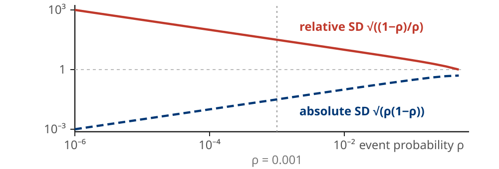

Deep Learning Math 9 · Monte Carlo & Importance Sampling — Notes
Companion to prob09-monte-carlo.html (@@N@@ slides; no fixed duration). Audience: junior undergraduate AI majors who have seen expectation, variance, the law of large numbers and concentration in prob01–prob08.
How to use it. There is one article per slide, in slide order, headed by the slide number and title. Each article opens with a one-sentence Message, then explains the slide well enough to teach it, then gives Details (derivations, numbers, figure provenance) and Sources. A text-only Markdown edition, prob09-monte-carlo-note.md, carries the same articles with every figure described in words.
Conventions. $X$ is a random outcome; $f$ a fixed integration function with target $\mu=\mathbb E_p[f(X)]$; $R$ the reward in the policy examples and $r$ the learned reward in the RLHF example (the PPO slide uses $r$ for its ratio, as in the cited figure, and says so). $p$ is the target and $q$ the proposal; $w=p/q$ is the normalized density ratio, $\tilde w=\tilde p/q$ the unnormalized one, and $\bar w_i$ the normalized share of draw $i$. $\sigma_f$ is the population standard deviation and $s_Y$ the observed sample standard deviation. $\theta$ denotes model parameters; the behavior policy $\pi_b$ and the reference policy $\pi_{\text{ref}}$ are never interchanged. Exponential distributions use the rate parameter. $\ln$ is the natural logarithm and KL is measured in nats. Results proved in earlier lectures are cited, not re-proved.
1. Monte Carlo & Importance Sampling
Message. Monte Carlo turns an expectation into a computation; choosing or reweighting the sampler changes the error, not the target.
Lecture 9 of Deep Learning Math, for junior undergraduates in AI. It builds on the earlier lectures' expectation, variance, the law of large numbers and concentration, and asks one practical question throughout: when an average has no convenient closed form, how do we estimate it, and what can we honestly say about the error?
Two editions of this note
This HTML note has one section per slide, in slide order, each headed by the slide's number and title. A text-only Markdown edition (prob09-monte-carlo-note.md) carries the same sections with every figure described in words, for screen readers.
2. Contents
Message. Five decisions organize the lecture.
Part 01 starts from two machine-learning averages, a population loss and a generator's pass rate, builds the ordinary Monte Carlo estimator and separates what it targets from how far one run can land from it. Part 02 changes the sampling distribution and corrects with importance weights. Part 03 asks when such a proposal helps and when it can make the error infinite. Part 04 removes the need to know the target's normalizing constant, with possible finite-sample bias. Part 05 applies the same ratio when reinforcement-learning data were collected under a different policy.
3. 01 · Estimate an Expectation
Message. First separate the number we want from the randomness of its estimate.
This part does not re-teach probability. It takes the expectation, the sample mean and its variance as known, and asks two questions: why machine learning keeps needing averages it cannot compute exactly, and what an estimate built from random draws promises: what it targets, how its error shrinks, how to report that error from the data, and why rare events need relative error.
00. One-Hot Cross-Entropy Equals KL
Message. At one labelled input, the familiar cross-entropy loss is exactly a KL divergence, and computing it is easy; the hard part is averaging it over data.
The slide recalls a known identity rather than proving it again. Fix one input $x$ whose label is $y$. The target distribution is the one-hot distribution $\delta_y$, which puts probability 1 on the class $y$ and 0 on every other class. The model distribution is the classifier's predicted class probabilities $q_\theta(\cdot \mid x)$. The display says that the cross-entropy (CE) of the model against the target, the KL divergence from the target to the model, and the familiar loss $-\log q_\theta(y \mid x)$ are the same number.
The grey line gives the reason and the condition. The identity is exact because a one-hot target has entropy 0, and it needs $q_\theta(y \mid x) \gt 0$; otherwise the loss is infinite. The highlight stops a common over-generalization: cross-entropy equals KL only in this one-hot case. In general cross-entropy is entropy plus KL. So the per-example loss of a labelled example is a quantity we can compute in one forward pass. The next slide asks for the loss over all data, which is an expectation.
Details
The one-hot computation. With target $\delta_y$ and model $q = q_\theta(\cdot \mid x)$,
$$\mathrm{CE}(\delta_y, q) = -\sum_k \delta_y(k)\log q(k) = -\log q(y),$$
$$D(\delta_y \,\|\, q) = \sum_k \delta_y(k)\log\frac{\delta_y(k)}{q(k)} = -\log q(y).$$
Terms with $\delta_y(k) = 0$ contribute $0$ by the convention $0 \log 0 = 0$. The entropy $H(\delta_y) = 0$, so the general identity below reduces to CE $=$ KL.
The general identity. For distributions $P$ and $Q$ on the same space with finite terms, $\mathrm{CE}(P, Q) = H(P) + D(P \,\|\, Q)$. The convention is truth or data first, model second.
Conditional classifiers. Over a whole data distribution, the expected per-example loss decomposes as a conditional entropy plus an expected conditional KL:
$$\mathbb E\big[-\log q_\theta(Y \mid X)\big] = H_P(Y \mid X)$$
$$\quad + \ \mathbb E_X\, D\big(P(\cdot \mid X) \,\|\, q_\theta(\cdot \mid X)\big),$$
assuming the terms are finite. This is a statement about conditional distributions of the label given the input. It is not a KL between the joint data distribution of $(X, Y)$ and the conditional model, which live on different spaces.
Units. With the natural logarithm the loss is in nats.
Sources
Course: prob02 note, §4.5 Theorem 3 (CE $=$ entropy $+$ KL), §6.6 Theorem 7 (one-hot CE $=$ KL), §6.8 (expected-loss decomposition); courses/deepmath/prob02-kl-crossentropy/prob02-kl-crossentropy-note.html (evidence 2026-11-18 E01). Goodfellow, Bengio and Courville, Deep Learning (2016), §3.13, eq. (3.51), deeplearningbook.org/contents/prob.html (evidence E02). The conditional form and its scope: evidence E09.
00. Population Loss Requires an Average
Message. The loss of a fixed classifier over all data is an expectation, and we estimate it by averaging per-example losses on sampled labelled examples.
The flow reads left to right. The first box, with a dashed red border, is the population loss $L(\theta) = \mathbb E[f(X, Y)]$, where the labelled pair $(X, Y)$ is drawn from the data distribution $P_{\text{data}}$. It averages over every possible pair, so it is the hard part. The middle box defines the per-example loss $f(x, y) = -\log q_\theta(y \mid x)$, the one-hot cross-entropy of the previous slide; it is easy for one example. The last box is the sample average $\frac1n\sum_{i=1}^n f(X_i, Y_i)$, which estimates $L(\theta)$. The same loss expression appears in all three boxes.
The line under the flow names the sampling distribution: the pairs $(X_i, Y_i)$ are IID draws of labelled data from $P_{\text{data}}$, not draws from the model $q_\theta$. Two roles must not be confused: $P_{\text{data}}$ is where the samples come from, and $q_\theta$ is the fixed classifier inside $f$. The grey lines state the conditions, a fixed model and a finite mean loss, and the scope: this evaluates one expectation; it is not a training algorithm.
Details
Why an average is needed. Each loss $-\log q_\theta(y \mid x)$ takes one forward pass. The integral over $P_{\text{data}}$ is usually unavailable: the data distribution is known only through samples, and the space of inputs is far too large to sum over.
The clean unbiasedness setup. Fix $\theta$ before looking at the evaluation data, draw fresh labelled pairs IID from $P_{\text{data}}$, and assume $\mathbb E|f(X, Y)| \lt \infty$. Then the sample mean is unbiased for $L(\theta)$ and converges to it. This is the Monte Carlo estimator of the coming slides with $f$ as the integrand.
What this does not cover. A minibatch drawn uniformly with replacement from a fixed training set estimates the empirical average over that set, not the population loss. For a model fitted on the same data, the training average is not automatically an unbiased estimate of $L(\theta)$; generalization is a separate question.
Notation. In the Monte Carlo notation used next, the random outcome is the pair $(X, Y)$, the sampling distribution is $P_{\text{data}}$, the integrand is $f$, and the target is $\mu = L(\theta)$.
Sources
Goodfellow, Bengio and Courville, Deep Learning (2016), §3.13, eq. (3.51), and the evidence note on fixed-model evaluation versus minibatch averages (evidence 2026-11-18 E02, E09). Sample-mean facts: Owen, Monte Carlo theory, methods and examples, Ch. 2 §§2.1–2.2, artowen.su.domains/mc/Ch-intro.pdf (evidence E03).
4. Sampled Replies Estimate Pass Rate
Message. A generative model is easy to sample, yet the expected score of its replies is hard to compute exactly.
Fix one prompt and one stochastic generative model $p$. The flow has three boxes. The first is the sampler $p$: drawing one reply $X$ is easy. The second is a fixed check: $f(x) = 1$ if the reply $x$ passes a specified format check, and $0$ otherwise; checking one reply is easy. The third box, with a dashed red border, is the pass rate $\mu = \Pr_p(\text{pass}) = \mathbb E_p[f(X)]$, the probability that a reply from this model passes. It averages over every possible reply, so it is the hard part.
The line under the flow marks the difference from the previous slide. There the samples were labelled data from $P_{\text{data}}$; here they are replies drawn from the model $p$ itself. The grey line gives the answer to the hard box: check a few sampled replies and average the pass indicators. The rest of Part 01 asks how accurate that average is. The roles stay fixed for the whole lecture: $X$ is the random outcome, $p$ the distribution we sample from, $f$ a fixed function we can evaluate, and $\mu$ the number we want.
Details
Why the exact average is hard. A reply of $T$ tokens over a vocabulary $V$ is one of $|V|^T$ sequences, so the exact pass rate is a sum with that many terms. Writing $p$ down is not the obstacle; summing over its support is. "Hard" means too many terms to sum, not "uncomputable"; no claim is made that a closed form cannot exist for a particular $(p, f)$.
Scope of the check. The format check is one fixed, deterministic pass/fail criterion chosen before sampling. Its pass rate is a useful example of an expectation, not a comprehensive measure of reply quality.
Sampling setup. The estimate needs independent random draws from the fixed model $p$. A deterministic decoding rule (for example, always taking the most likely token) does not by itself supply IID draws from $p$, and no particular decoding setting is claimed to implement $p$.
No numbers. The slide shows no performance figure; the example is an illustration of the setup, not a reported experiment.
Link to prob08. prob08 closed with a bridge slide: Gaussian models gave closed-form answers, many expectation integrals in more general models do not, and the remedy is to replace $\int g(x) f_X(x)\,dx$ by an average of $g$ over IID samples. This lecture takes that remedy and asks how accurate it is.
Sources
Generator-evaluation setup: evidence 2026-11-18 E10 (illustrative application, not a benchmark). Expectation and Monte Carlo average: Owen, Monte Carlo theory, methods and examples, Ch. 2 §§2.1–2.2, artowen.su.domains/mc/Ch-intro.pdf (evidence E03). prob08's closing bridge slide, course repository at commit b20ab73. The $|V|^T$ count is direct counting.
5. Sample, Evaluate, Average
Message. An expectation can be estimated by averaging evaluations at random draws.
The slide shows the recipe as three numbered boxes. Step 1, sample: draw $X_1, \dots, X_n$ independently from $p$. Step 2, evaluate: compute $f(X_1), \dots, f(X_n)$. Step 3, average: report $\frac1n \sum_i f(X_i)$ as the estimate of $\mu$. Each step uses only an easy box from the previous slide.
The recipe needs draws from $p$, not a formula for the density $p(x)$. A language model, a simulator or a physical experiment can supply draws even when nobody can write down the probability of a given outcome. Whether the average is any good is a separate question; the next slides answer it, and only under stated conditions.
Details
IID in plain words. "Independent and identically distributed": each draw comes from the same $p$, and no draw influences another. Re-using one draw twice, or changing the sampler mid-run, breaks it.
Hold $f$ fixed. The function $f$ must be chosen before the draws are made and kept the same for every draw. If $f$ is tuned after looking at the sample, the average estimates something else, and the error guarantees below do not apply.
Integrability. The target exists only if $\mathbb E_p|f(X)| \lt \infty$. The slide states this as an assumption; [[S16]] makes it part of the formal estimator.
Sources
E01: sample-mean facts from prob05 (pp. 39, 46, 93), course repository at commit b20ab73. E02: Owen, Ch. 1–2, §2.1.
6. Six Points Illustrate the Recipe
Message. With six points the recipe gives a number, but nothing yet about how close it is.
The figure shows the square $[-1,1]^2$ with the unit disk inside it. Four points sit inside the disk (filled blue) and two outside (hollow grey). Take $X$ uniform on the square and $f(X) = 4 \cdot \mathbf 1\{X \text{ in disk}\}$. The disk covers $\pi/4$ of the square, so $\mu = 4 \cdot \pi/4 = \pi$. Four hits out of six give $\hat\mu_6 = 4 \cdot 4/6 = 8/3 \approx 2.67$.
The six points are hand-chosen to show the recipe. They are not a random run, and one estimate of $8/3$ against a true $\pi$ says nothing about how often the recipe is that far off. That needs the distribution of the estimator, which comes next.
Details
Full ledger. For each point, compare $x^2 + y^2$ with 1:
- $(0.5, 0.5)$: $0.50$, in
- $(-0.9, 0.8)$: $1.45$, out
- $(0.2, -0.6)$: $0.40$, in
- $(-0.4, 0.1)$: $0.17$, in
- $(0.8, -0.7)$: $1.13$, out
- $(0.3, 0.9)$: $0.90$, in
Four hits, so $\hat\mu_6 = 4 \cdot \tfrac46 = \tfrac83$.
No inference from this run. A hand-picked sample does not support an error bar or a confidence statement. For genuinely IID uniform draws, $Y = 4\cdot\mathbf 1\{\text{hit}\}$ has $\mathbb E[Y] = \pi$ and $\mathrm{Var}(Y) = \pi(4 - \pi) \approx 2.6968$; [[S19]] and [[S22]] use these exact values.
Sources
E17: six hand-chosen points and their hit count, recomputed from exact disk geometry. Figure: inline SVG; coordinates and the ledger printed by gen/p9a_part01.py (deterministic, no random draws).
7. Monte Carlo Reuses the Sample Mean
Message. Renaming $Y_i = f(X_i)$ turns the Monte Carlo estimator into an ordinary sample mean.
The display labels each part of the estimator. $\hat\mu_n$ is the estimate of $\mu$; $\frac1n\sum_{i=1}^n$ is the average; $f(X_i)$ is the $i$th evaluation, renamed $Y_i$. With $X_1, \dots, X_n$ IID from $p$, the $Y_i$ are IID scalars, and $\hat\mu_n = \bar Y_n$. Every fact about sample means now applies without new proofs.
The recall card states the two facts needed first: if $\mathbb E|Y_1| \lt \infty$, then $\mathbb E[\bar Y_n] = \mathbb E[Y_1]$ and $\bar Y_n \to \mathbb E[Y_1]$ by the law of large numbers. The two bullets keep the two moment conditions apart. A finite first moment is enough for $\mu$ to exist and for the LLN. A finite variance $\sigma_f^2 = \mathrm{Var}_p(f(X))$ is an extra assumption, and it is what error rates need.
Details
Definition. Let $p$ be a distribution and $f$ a fixed function with $\mathbb E_p|f(X)| \lt \infty$. Set $\mu = \mathbb E_p[f(X)]$. For $X_1, \dots, X_n$ IID from $p$, the Monte Carlo estimator is
$$\hat\mu_n = \frac1n \sum_{i=1}^n f(X_i).$$
Why $Y_i$ are IID. A fixed function of independent, identically distributed inputs gives independent, identically distributed outputs. This is why $f$ must not depend on the sample.
Consistency. Under $\mathbb E|Y_1| \lt \infty$ alone, the strong law of large numbers gives $\hat\mu_n \to \mu$ with probability 1. It is imported from prob05, not reproved, and it says nothing about how fast.
Notation. $\sigma_f^2$ is the population variance of $f(X)$ under $p$, a fixed unknown number. The observed sample spread $s_Y$ appears only on [[S114]].
Sources
E01: sample-mean expectation, variance, LLN and CLT in prob05 (pp. 39, 46, 93), commit b20ab73. E02: Owen, Ch. 1–2, §§2.1–2.2 (first absolute moment for the mean and LLN, finite variance for RMSE and CLT).
8. Unbiased Does Not Mean Accurate
Message. The estimator is right on average at every $n$, yet a single run can be far off.
The top line is linearity of expectation: $\mathbb E[\hat\mu_n] = \frac1n\sum_i \mathbb E_p[f(X_i)] = \mu$, for every $n$, including $n = 1$.
The bar chart shows the exact distribution of $\hat\mu_6$ for six IID darts. The estimate is $4K/6$, where $K$, the number of hits, is Binomial$(6, \pi/4)$. The x-axis lists the seven possible values $0, \tfrac23, \tfrac43, 2, \tfrac83, \tfrac{10}3, 4$; bar heights are their probabilities. The large bars are $0.096$ at 2, $0.263$ at $\tfrac83$, $0.385$ at $\tfrac{10}3$ and $0.235$ at 4. A dashed red line marks the mean, $\pi$, which falls between $\tfrac83$ and $\tfrac{10}3$. No possible value equals $\pi$, and about 35% of runs miss it by at least 0.5. Unbiasedness is a statement about the centre of this distribution, not about any single run.
Details
Proof of unbiasedness. Each $X_i \sim p$, so $\mathbb E[f(X_i)] = \mu$. Linearity gives
$$\mathbb E[\hat\mu_n] = \frac1n\sum_{i=1}^n \mathbb E[f(X_i)]$$
$$= \frac1n \cdot n\mu = \mu.$$
Independence is not used: identically distributed draws with $\mathbb E|f(X)| \lt \infty$ suffice for this identity. Independence matters for the variance on [[S22]].
Bias and variance. In prob07's decomposition, mean squared error is squared bias plus variance. Here the bias is zero, so all of the error is variance. That is the quantity averaging must shrink.
Exact numbers. $\Pr(|\hat\mu_6 - \pi| \ge 0.5) = 0.3523$ and the RMSE at $n = 6$ is $0.6704$, both from the Binomial$(6, \pi/4)$ law.
Sources
E01: bias–variance and the sample mean, prob07 (pp. 98, 102), commit b20ab73. E17: darts setup. Figure: inline SVG; probabilities and bar coordinates printed by gen/p9a_part01.py (exact Binomial probabilities, no random draws).
9. Averaging Reduces RMSE
Message. With IID draws and finite variance, the typical error falls like $1/\sqrt n$.
The first line states both assumptions: IID draws, and finite $\sigma_f^2 = \mathrm{Var}_p(f(X))$. The display defines the root-mean-squared error, $\mathrm{RMSE}(\hat\mu_n) = \sqrt{\mathbb E[(\hat\mu_n - \mu)^2]}$. Because the estimator is unbiased, this equals its standard deviation, $\sigma_f/\sqrt n$.
The plot shows this exact formula for the darts, where $\sigma_f = \sqrt{\pi(4-\pi)} \approx 1.64$. Both axes are logarithmic: $n$ from 10 to $10^6$ across, RMSE from 1 down to $10^{-3}$. On log–log axes the curve is a straight line. Two marked points read $0.164$ at $n = 100$ and $0.0164$ at $n = 10^4$: one hundred times as many draws make the RMSE ten times smaller.
Details
Variance of the average. For independent $Y_i$ with common variance $\sigma_f^2$, the covariances vanish and
$$\mathrm{Var}(\bar Y_n) = \frac{1}{n^2}\sum_{i=1}^n \mathrm{Var}(Y_i) = \frac{\sigma_f^2}{n}.$$
Unbiasedness makes the squared bias zero, so $\mathrm{RMSE}^2 = \mathrm{Var}(\hat\mu_n) = \sigma_f^2/n$.
Darts numbers. $\sigma_f^2 = \pi(4 - \pi) \approx 2.6968$, $\sigma_f \approx 1.642$. RMSE: $0.519$ at $n = 10$, $0.164$ at $10^2$, $0.0164$ at $10^4$, $0.00164$ at $10^6$.
What RMSE is not. RMSE describes the spread over many repeated runs. It is not a bound on the error of the run in hand: a single run can miss by several RMSEs. Bounds that hold with stated probability come on [[S115]] and [[S24]].
Sources
E02: Owen, Ch. 1–2, §§2.1–2.2 (variance $\sigma_f^2/n$ under finite variance). E01: prob05 sample-mean variance (p. 39), prob07 MSE decomposition (pp. 98, 102), commit b20ab73. E17: $\pi(4-\pi)$. Figure: inline SVG; RMSE values and coordinates printed by gen/p9a_part01.py.
10. Standard Error Measures Estimator Spread
Message. The standard error is the spread of the estimate across repeated samples; the sample estimates it, but not this run's error.
The first line defines the term: the standard error (SE) is the standard deviation of the sample mean $\bar Y_n$ across repeated samples. Imagine rerunning the whole experiment many times, each time with a fresh batch of $n$ draws, and recording $\bar Y_n$ each time; the SE is the standard deviation of those recorded means. The second line gives the conditions: IID evaluations, finite variance, and at least two draws.
The flow then reads left to right. The observed data $Y_1, \dots, Y_n$ give the sample variance $s_Y^2 = \frac{1}{n-1}\sum_i (Y_i - \bar Y_n)^2$, and dividing its square root by $\sqrt n$ gives the estimated standard error $\widehat{\mathrm{SE}} = s_Y/\sqrt n$. The next line separates three quantities. The true SE is $\sigma_f/\sqrt n$; $\sigma_f$ is the outcome SD, the spread of a single evaluation $Y$, and $s_Y$ estimates it. The highlight separates both from the actual error: $\widehat{\mathrm{SE}}$ estimates how far runs typically land from $\mu$, not the error $|\hat\mu_n - \mu|$ of the run in hand.
Details
Outcome SD versus SE. $s_Y$ describes how much individual evaluations vary; it does not shrink as $n$ grows. $s_Y/\sqrt n$ describes how much the average varies; it shrinks like $1/\sqrt n$. Reporting $s_Y$ as the error bar of the mean overstates the uncertainty by a factor $\sqrt n$.
Units. $s_Y$ and $\widehat{\mathrm{SE}}$ have the units of $f$; $s_Y^2$ has squared units. Report the SE, not the variance, next to the estimate.
Why $n - 1$. With divisor $n - 1$, $\mathbb E[s_Y^2] = \sigma_f^2$ for IID data with finite variance. That needs $n \ge 2$.
Example of the right data. The formula applies to genuinely IID evaluations, for instance a fixed check applied to independently sampled model replies. It does not apply to the six hand-chosen darts on [[S26]].
Unseen tails. $s_Y$ is always finite, because it is computed from finitely many numbers; it can even be $0$ when every draw gave the same value. It cannot show that $\sigma_f$ is finite or positive. If rare draws carry very different values that the sample never hit, $s_Y$ will understate the spread. (This qualifier was a grey line on the slide in the previous version; it now lives here.)
Next. [[S115]] turns $\widehat{\mathrm{SE}}$ into an approximate interval and contrasts it with a finite-sample guarantee.
Sources
Owen, Monte Carlo theory, methods and examples, Ch. 2 §§2.1–2.4 (finite-variance error, estimated standard error), artowen.su.domains/mc/Ch-intro.pdf (evidence 2026-11-18 E03). Prior-job evidence: Owen §§2.7–2.8; prob05 sample-mean variance (p. 39), commit b20ab73.
11. Approximate Intervals, Exact Guarantees
Message. An error bar can be a large-$n$ approximation or a finite-$n$ guarantee; they answer different questions.
The left card is the usual interval $\bar Y_n \pm 1.96\,\widehat{\mathrm{SE}}$. Its coverage is about 95% when $n$ is large, under IID draws with $0 \lt \sigma_f^2 \lt \infty$. It is an approximation; a large $n$ alone does not certify that the normal approximation is accurate for the integrand at hand.
The right card is Chebyshev's inequality applied to $\bar Y_n$: $\Pr(|\bar Y_n - \mu| \ge \epsilon) \le \sigma_f^2/(n\epsilon^2)$. It holds at every $n$, but it needs the true $\sigma_f^2$, or a proven upper bound on it. Plugging in the observed $s_Y^2$ voids the guarantee. The bottom line names the difference: approximate coverage against a guaranteed tail bound.
Details
Where 1.96 comes from. By the CLT, $\sqrt n(\bar Y_n - \mu)/\sigma_f$ is approximately standard normal for large $n$. Replacing $\sigma_f$ by $s_Y$ (studentization) keeps the same limit. The value 1.96 is the 0.975 quantile of the standard normal, $1.95996$ to five decimals.
Chebyshev. Apply $\Pr(|Z - \mathbb E Z| \ge \epsilon) \le \mathrm{Var}(Z)/\epsilon^2$ to $Z = \bar Y_n$, with $\mathrm{Var}(\bar Y_n) = \sigma_f^2/n$. Setting the right side to $\delta$ gives a sufficient sample size:
$$n \ge \frac{\sigma_f^2}{\delta\,\epsilon^2}.$$
Darts. With the known $\sigma_f^2 = \pi(4-\pi)$, $\epsilon = 0.01$ and $\delta = 0.05$, $n \ge 539{,}353.24$, so $n = 539{,}354$ suffices. This is sufficient, not minimal. It uses a known variance as a teaching benchmark.
Consistency is weaker. Chebyshev also shows $\Pr(|\bar Y_n - \mu| \ge \epsilon) \to 0$ for each fixed $\epsilon$, which is the weak law. It gives no interval for one run.
Sources
E02: Owen, Ch. 1–2, §§2.7–2.8 (asymptotic intervals versus nonasymptotic bounds). E01: CLT in prob05 (p. 93), commit b20ab73. E17: Chebyshev sample size 539,354. Quantile and arithmetic printed by gen/p9a_part01.py.
12. Bounded Averages Concentrate
Message. If $f$ has a known range, Hoeffding gives a finite-sample bound with no variance needed.
The recall card restates prob06's Hoeffding inequality for IID $W_i \in [0,1]$: $\Pr(|\bar W_n - \mathbb E W_1| \ge t) \le 2e^{-2nt^2}$. If instead $Y_i \in [a, b]$ with $a \lt b$, rescale with $W_i = (Y_i - a)/(b - a)$ and $t = \epsilon/(b - a)$. The display gives the result: $\Pr(|\bar Y_n - \mu| \ge \epsilon) \le 2\exp(-2n\epsilon^2/(b-a)^2)$.
For the darts, $Y \in [0, 4]$. With $\epsilon = 0.01$ and $\delta = 0.05$, $n \ge 295{,}111$ suffices. The range must be known in advance, not estimated from the sample, and $f$ must be fixed before sampling.
Details
Rescaling. $W_i \in [0,1]$ and $\bar W_n - \mathbb E W_1 = (\bar Y_n - \mu)/(b - a)$, so the event $|\bar Y_n - \mu| \ge \epsilon$ is the event $|\bar W_n - \mathbb E W_1| \ge \epsilon/(b-a)$.
Inverting for $n$. Set $2\exp(-2n\epsilon^2/(b-a)^2) \le \delta$:
$$n \ge \frac{(b-a)^2 \ln(2/\delta)}{2\epsilon^2}.$$
Darts: $(b-a)^2 = 16$, $\ln 40 = 3.688879$, so $n \ge 295{,}110.36$, rounded up to $295{,}111$. At that $n$ the bound is at most $0.05$.
Comparison. Chebyshev with the known variance needed $539{,}354$ ([[S115]]), about $1.83$ times as many. Both are sufficient sample sizes from upper bounds, not minimal ones, and neither says how a particular run behaves. For scale, the RMSE at $n = 295{,}111$ is about $0.0030$.
Edge case. If $Y$ is constant, $a = b$ is not allowed, but no bound is needed: $\bar Y_n = \mu$ exactly.
Fixed versus data-selected $f$. The bound holds for one $f$ chosen before sampling. If $f$ is picked among many candidates using the same sample, the bound no longer applies to the picked one.
Sources
E01: Hoeffding on $[0,1]$, prob06 (p. 18), commit b20ab73; prob06 states it on $[0,1]$, and the $[a,b]$ form is the rescaling above. E17: Hoeffding sample size 295,111. Arithmetic printed by gen/p9a_part01.py.
00. Small Absolute Error Can Hide Failure
Message. For a rare event, an estimate can be close in absolute terms and still miss the whole answer.
Let $Y$ indicate an event of probability $\rho = 0.001$, so $Y \sim \mathrm{Bernoulli}(\rho)$ and the target is $\mu = \rho$. Take $n = 1000$ IID draws. The expected number of hits is $n\rho = 1$, and the chance that no draw hits the event is $0.999^{1000} \approx 0.368$, about 37%. In that case the estimate is $\hat\mu_n = 0$ while the truth is $0.001$.
The two cards read that one run in two ways. The absolute error is $|0 - 0.001| = 0.001$, which looks tiny. The relative error divides by the target: $0.001/0.001 = 100\%$, so the estimate misses the entire quantity it was meant to measure. The grey line fixes the scope: this is one possible run, and 37% is its probability. It is not the typical error, which the next slide measures by RMSE.
Details
Relative error. For a positive target, relative error $= |\hat\mu - \mu| / \mu$. It is undefined for $\mu = 0$.
Why "small minus small" misleads. Any estimate between $0$ and $0.002$ has absolute error at most $0.001$, including $0$, which says the event never happens, and $0.002$, which doubles its probability. On the scale of the answer these are failures. Rare-event probabilities must be judged relative to $\rho$.
A run versus repeated samples. The zero-hit run is one outcome of the random experiment. Its probability is $(1 - \rho)^n = 0.999^{1000} = 0.3676954248$. Repeated-sample accuracy is a different quantity: the RMSE averages the squared error over all possible runs.
Zero empirical spread. After a zero-hit run every $Y_i = 0$, so $s_Y = 0$ and $\widehat{\mathrm{SE}} = 0$. The true per-draw variance $\rho(1 - \rho) \approx 0.000999$ is not zero. A zero error bar after no hits is a symptom of the problem, not evidence of precision.
Sources
Owen, Monte Carlo theory, methods and examples, Ch. 2, Bernoulli rare-event discussion (printed pp. 24–25), artowen.su.domains/mc/Ch-intro.pdf (evidence 2026-11-18 E03). Toy example and arithmetic: evidence E03; reproduced by gen/p9a_part01.py (exact, no random draws).
00. Relative Error Needs Enough Hits
Message. Relative precision depends on the expected number of event hits, not just on the number of draws.
The first line gives the setting, IID $Y_i \sim \mathrm{Bernoulli}(\rho)$ with $0 \lt \rho \lt 1$, and names $n\rho$ as the expected number of hits. The display gives the relative RMSE, the RMSE divided by the target: $\sqrt{(1-\rho)/(n\rho)}$. For a rare event $1 - \rho \approx 1$, so the relative RMSE is about $1/\sqrt{n\rho}$, one over the square root of the expected hits.
The two cards apply it to the same $\rho = 0.001$ as the previous slide. With $n = 1000$ draws there is one expected hit and the relative RMSE is about 100%. A relative RMSE of at most 10% needs $n \ge 99{,}900$, about 100 expected hits. The grey line fixes the meaning: this is a target for the RMSE, the typical repeated-sample error. It is not a 95% confidence statement and not a bound on the error of one run.
Details
Absolute RMSE. $\mathrm{Var}(Y) = \rho(1 - \rho)$ and the estimator is unbiased, so
$$\mathrm{RMSE}(\hat\mu_n) = \sqrt{\frac{\rho(1-\rho)}{n}},$$
$$\frac{\mathrm{RMSE}(\hat\mu_n)}{\rho} = \sqrt{\frac{\rho(1-\rho)}{n\rho^2}} = \sqrt{\frac{1-\rho}{n\rho}}.$$
Numbers for $\rho = 0.001$, $n = 1000$. Absolute RMSE $= 0.000999499875$; relative RMSE $= 0.999499875$.
Ten percent. $\sqrt{(1-\rho)/(n\rho)} \le 0.1$ is $n \ge (1 - \rho)/(0.01\,\rho) = 0.999/0.00001 = 99{,}900$. At that $n$ the expected number of hits is $99.9$.
Figure moved from the slide: per-draw spreads against $\rho$.

Both axes are logarithmic. Across, the event probability $\rho$ runs from $10^{-6}$ to $1/2$; up, values run from $10^{-3}$ to $10^3$, with a grey dashed reference line at 1. The dashed blue curve is the per-draw absolute SD $\sigma_f = \sqrt{\rho(1-\rho)}$: it falls as the event gets rarer, from $0.5$ at $\rho = 1/2$ to about $0.001$ at $\rho = 10^{-6}$. The solid red curve is the per-draw relative SD $\sigma_f/\rho = \sqrt{(1-\rho)/\rho}$: it rises as the event gets rarer, from $1$ at $\rho = 1/2$ to about $1000$ at $\rho = 10^{-6}$. The endpoints at $\rho = 1/2$ are unequal ($1/2$ and $1$), so the curves do not meet on the displayed range. A grey dashed vertical line marks $\rho = 0.001$, where the absolute SD is about $0.0316$ and the relative SD about $31.6$.
Reading it. Dividing either curve by $\sqrt n$ gives the corresponding RMSE at sample size $n$; at fixed $n$ this shifts both curves down by the same factor and leaves their shapes unchanged. On $0 \lt \rho \le 1/2$, at fixed $n$, a rarer event has a lower absolute RMSE but a higher relative RMSE. The monotonic comparison is stated only on that range, and it concerns distribution-level RMSEs, not individual runs.
Applied thread. Part 02 returns to this problem with a concrete exponential rare event and its own numbers, then changes the sampler so the event is no longer rare.
Sources
Owen, Monte Carlo theory, methods and examples, Ch. 2, Bernoulli rare-event discussion (printed pp. 24–25), artowen.su.domains/mc/Ch-intro.pdf (evidence 2026-11-18 E03). Figure fig/p9a-rare-sd.svg and all numbers: gen/p9a_part01.py (exact formula curves, no random draws; same curve coordinates as the former on-slide plot).
16. 02 · Change the Sampler
Message. Visit useful outcomes more often without changing the target.
Part 01 ended with a rare event whose relative error ordinary sampling cannot control at a reasonable sample size. The fix is to draw from a different distribution that visits the important region more often, and to correct each draw by a weight so that the average still targets the original expectation.
17. Most Draws Miss the Tail
Message. A rare-event probability with a known answer shows why plain sampling wastes almost every draw.
The running example takes the target $p$ to be the exponential distribution with rate $1$, so $p(x) = e^{-x}$ for $x \geq 0$. The quantity we want is the probability that $X$ exceeds $10$. Write it as an expectation with the indicator integrand $f(x) = \mathbf{1}\{x \gt 10\}$, so $\mu = \mathbb{E}_p[f(X)] = \Pr_p(X \gt 10)$. The figure plots the exact density on $[0, 14]$. Past $x = 10$ the curve is indistinguishable from zero at this scale, so the inset magnifies the tail: there the density is below $5 \times 10^{-5}$. The plot stops at $x = 14$, but the tail continues beyond the displayed range: $\mu$ is the area of the whole tail past $10$, of which the shaded patch shows only the part up to $14$.
Because the answer is known in closed form, we can measure every estimator against it. Ordinary sampling lands in the event about once in $22{,}026$ draws on average, since $1/\mu = e^{10} \approx 22{,}026.47$.
Details
The integral is elementary:
$$\begin{aligned}
\mu &= \int_{10}^{\infty} e^{-x}\,dx \\
&= e^{-10} \approx 4.5400 \times 10^{-5}.
\end{aligned}$$
"Rate $1$" fixes the parametrization used throughout the lecture: $\mathrm{Exp}(\lambda)$ has density $\lambda e^{-\lambda x}$ on $x \geq 0$. The figure is the exact density, not a simulation; the inset's vertical axis runs from $0$ to $5 \times 10^{-5}$.
Sources
Our calculation (E11 setup: $p = \mathrm{Exp}(1)$, $f = \mathbf{1}\{x \gt 10\}$, $\mu = e^{-10}$). Numbers: gen/p9b_calc.py. Figure: gen/p9b_figs.py → fig/p9b-tail.svg (deterministic, no random draws).
18. A Rare Event Needs Many Samples
Message. For $10\%$ relative RMSE on $\mu = e^{-10}$, ordinary Monte Carlo needs about $2.2$ million draws.
Each ordinary draw gives $f(X_i) \in \{0, 1\}$, a Bernoulli variable with mean $\mu$ and variance $\mu(1-\mu)$. The sample mean of $n$ draws therefore has RMSE $\sqrt{\mu(1-\mu)/n}$. Dividing by $\mu$ gives the relative RMSE on the slide. Asking for relative RMSE at most $0.1$ and solving for $n$ gives $n \geq 100\,(1-\mu)/\mu$. The braced factor $(1-\mu)/\mu = e^{10} - 1 \approx 22{,}025$ is the relative variance of a single draw: one indicator draw is very noisy compared with the tiny number it estimates.
The result is $n \geq 2{,}202{,}547$ after rounding up. This is a statement about the spread of the estimator. It is not a $95\%$ confidence guarantee, and it says nothing about wall-clock time.
Details
$$\begin{aligned}
\frac{\mathrm{RMSE}}{\mu}
&= \frac{\sqrt{\mu(1-\mu)/n}}{\mu} \\
&= \sqrt{\frac{1-\mu}{n\,\mu}}.
\end{aligned}$$
Setting this $\leq 0.1$ and squaring:
$$\begin{aligned}
n &\geq 100 \cdot \frac{1-\mu}{\mu} \\
&= 100\,(e^{10} - 1) \\
&\approx 2{,}202{,}546.58,
\end{aligned}$$
so the smallest integer is $2{,}202{,}547$. The estimator is unbiased, so RMSE equals its standard deviation.
Sources
E02: sample-mean variance $\sigma_f^2/n$ (Owen, Ch. 2, §§2.1–2.2). Numbers: E11, recomputed in gen/p9b_calc.py.
19. Visit Useful Outcomes More Often
Message. Importance sampling draws from a different distribution $q$ that visits the event more often, while the target $\mu$ stays fixed.
The schematic shows a number line with the event $x \gt 10$ shaded. The top row is a set of draws from the target $p$: they crowd near zero and none reaches $10$. The bottom row is a set of draws from a proposal $q$ that spreads its mass further out, so several land in the event.
The proposal changes only where we sample. The target density $p$, the integrand $f$ and the number $\mu$ do not change. That creates a problem: a plain average of $f(X_i)$ with $X_i \sim q$ estimates $\mathbb{E}_q[f(X)] = \Pr_q(X \gt 10)$, which is a different number. The next step corrects each draw.
Details
The dots are hand-placed to show the idea; they are not simulated draws and their counts mean nothing. The proposal used later in the lecture is $q = \mathrm{Exp}(0.1)$, for which $\Pr_q(X \gt 10) = e^{-1} \approx 0.37$.
Sources
E04 (Owen, Ch. 9, §9.1). Figure: gen/p9b_figs.py → fig/p9b-visits.svg, schematic.
20. Correct Each Visit's Weight
Message. The weight $w = p/q$ scales each draw by how much the proposal over- or under-visits its location.
The weight is the target density divided by the proposal density, defined wherever $q(x) \gt 0$. If $q$ visits a point less often than $p$ would, the weight is above $1$ and boosts that draw. If $q$ visits it more often, the weight is below $1$ and shrinks it.
The bar chart uses three outcomes $a, b, c$ with hand-picked values. The target puts $0.5, 0.3, 0.2$ on them; the proposal puts $0.25, 0.25, 0.5$. The ratios are $w = 2, 1.2, 0.4$: outcome $c$ is over-visited and down-weighted, outcome $a$ is under-visited and up-weighted. For continuous $x$ the weight is a ratio of densities, so it can exceed $1$; it is not a probability.
Details
The average weight under $q$ is
$$\begin{aligned}
\mathbb{E}_q[w(X)] &= \int_{\{q \gt 0\}} p(x)\,dx \\
&= \Pr_p\big(q(X) \gt 0\big) \;\leq\; 1,
\end{aligned}$$
with equality when $q$ is positive wherever $p$ is. In the bar example $0.25 \cdot 2 + 0.25 \cdot 1.2 + 0.5 \cdot 0.4 = 1$.
Notation for the rest of the lecture: $w = p/q$ is the normalized ratio; $\tilde{w}$ will denote an unnormalized ratio and $\bar{w}$ a normalized sampled share.
Sources
E04 (Owen, Ch. 9, §9.1). Figure: gen/p9b_figs.py → fig/p9b-ratio.svg; illustrative values chosen by hand.
21. Importance Sampling Preserves the Target
Message. Under integrability and a coverage condition, the weighted integrand has the same mean under $q$ as $f$ has under $p$.
The theorem has two assumptions. First, $\mathbb{E}_p|f(X)| \lt \infty$, so $\mu$ exists. Second, $q$ must be positive wherever $f(x)\,p(x) \neq 0$, up to a set of probability zero. Then the expectation of $f$ under $p$ equals the expectation of $f\,w$ under $q$. The braces under each side name the distribution the expectation is taken under: the left side samples from $p$, the right side from $q$.
Two limits. To use the right side we must compute $p(x)/q(x)$ at every draw, so both densities must be evaluable, including their normalizing constants. And the theorem equates means only. It says nothing about variance; whether $q$ helps is a separate question.
Details
The coverage condition involves $fp$, not $p$: $q$ may vanish where $f = 0$ even if $p \gt 0$ there. The identity makes $\hat{\mu}_{\mathrm{IS}}$ unbiased, and the integrable law of large numbers then gives consistency.
Sources
E04: Art B. Owen, Monte Carlo theory, methods and examples, Ch. 9, §9.1, Theorem 9.1.
22. Proof: Cancel the Proposal
Message. Writing the $q$-expectation as an integral cancels $q$, leaving $\int fp$ over the region where $q \gt 0$.
A draw from $q$ lands in $\{q \gt 0\}$ with probability one, so the expectation of $f\,w$ under $q$ is an integral over that region (LOTUS). Inside it, $w = p/q$ and the factor $q$ cancels. What remains is $\int f\,p$, but still only over $\{q \gt 0\}$. The region where $q = 0$ has not been accounted for; that is the job of the next step.
Details
$$\begin{aligned}
\mathbb{E}_q[f w]
&= \int_{\{q \gt 0\}} f\,\frac{p}{q}\,q\,dx \\
&= \int_{\{q \gt 0\}} f\,p\,dx.
\end{aligned}$$
The assumption $\mathbb{E}_p|f| \lt \infty$ makes $\int |f|p$ finite, so every integral here converges absolutely and the cancellation is legitimate. For a discrete $X$ replace integrals by sums over states.
Sources
E04 (Owen, Ch. 9, §9.1, Theorem 9.1). LOTUS: E01 (course prerequisite, prob01).
23. Proof (continued): Check the Missing Region
Message. The unsampled region contributes nothing because $fp = 0$ there, so the two expectations agree.
The strip splits the line into the region $\{q \gt 0\}$, which the proposal samples, and the region $\{q = 0\}$, which it never visits. The full target integral $\int fp$ is the sum of the two pieces. The first piece is $\mathbb{E}_q[fw]$ by the previous step. The second piece is zero because the coverage assumption says $fp = 0$ wherever $q = 0$. That completes the proof.
Only the product $fp$ must vanish there. The target $p$ itself may be positive on $\{q = 0\}$, as long as $f$ is zero there.
Details
$$\begin{aligned}
\mathbb{E}_p[f]
&= \int_{\{q \gt 0\}} fp\,dx + \int_{\{q = 0\}} fp\,dx \\
&= \mathbb{E}_q[fw] + 0.
\end{aligned}$$
"Up to a null set" is enough: if $fp \neq 0$ only on a set of $p$-probability zero inside $\{q = 0\}$, that piece still integrates to zero.
Sources
E04 (Owen, Ch. 9, §9.1, Theorem 9.1).
24. Missing Support Cannot Be Repaired
Message. In this four-state example, missing the only contributing state makes every estimate zero instead of $1/4$.
The target is uniform on four states, $p(x) = 1/4$, and the integrand picks out state $4$, so $\mu = 1/4$. The proposal is uniform on states $1, 2, 3$ only, so $q(4) = 0$. The bar chart shows the target bars on all four states and the dashed proposal bars missing on state $4$, the only state where $f = 1$.
Every draw lands in $\{1,2,3\}$, gets weight $(1/4)/(1/3) = 3/4$, and has $f = 0$. So $\hat{\mu}_{\mathrm{IS}} = 0$ for every $n$. The weights look perfectly balanced, yet the estimate is exactly wrong, and more draws cannot help because state $4$ is never visited.
Details
Here $\mathbb{E}_q[fw] = 0 \neq 1/4$ and $\mathbb{E}_q[w] = 3/4$, matching $\Pr_p(q(X) \gt 0) = 3/4$. The coverage assumption fails, so the theorem does not apply; this is not a counterexample to it. Equal weights mean a self-normalized version also returns $0$.
Sources
E19 (our calculation, direct enumeration). Numbers: gen/p9b_calc.py. Figure: gen/p9b_figs.py → fig/p9b-support.svg.
25. Average the Weighted Integrand
Message. The importance-sampling estimator draws from $q$, weights each value of $f$ by $p/q$, and divides by $n$.
The flow reads left to right: draw $X_i$ from $q$; evaluate $f$, $p$ and $q$ at that point; form $Y_i = f(X_i)\,w(X_i)$; average the $n$ values. The formula is the same recipe. Under the conditions of the identity, each $Y_i$ has mean $\mu$, so the average is unbiased.
Divide by $n$, not by the sum of the weights; dividing by the weight sum is a different estimator. Compared with ordinary Monte Carlo, each draw also costs one evaluation of $p$ and of $q$.
Details
$$\begin{aligned}
\hat{\mu}_{\mathrm{IS}} &= \frac{1}{n}\sum_{i=1}^{n} f(X_i)\,w(X_i), \\
\mathbb{E}\big[\hat{\mu}_{\mathrm{IS}}\big] &= \mathbb{E}_q[fw] = \mu.
\end{aligned}$$
If $\mathbb{E}_q[(fw)^2]$ is finite, the variance is $\mathrm{Var}_q(fw)/n$; this is the subject of Part 03.
Sources
E04 (Owen, Ch. 9, §9.1).
26. A Practical Exponential Proposal
Message. A heavier-tailed exponential, $q = \mathrm{Exp}(0.1)$, is a simple valid proposal for the rare event.
The proposal keeps the exponential family but lowers the rate from $1$ to $0.1$, so its tail decays ten times more slowly. The figure plots both exact densities on a log scale: the target falls to about $10^{-6}$ by $x = 14$, while the proposal stays between $10^{-1}$ and $10^{-2}$ and lies far above the target throughout the event.
Both densities are positive on all of $x \geq 0$, so coverage holds. The proposal's normalizer is $0.1$, a known number, so the weight $p/q$ can be computed without knowing $\mu$. The rate $0.1$ is an illustrative choice, not an optimum.
Details
$q(x) = 0.1\,e^{-0.1x}$ on $x \geq 0$. Sampling it is as easy as sampling $p$: if $E \sim \mathrm{Exp}(1)$ then $10E \sim \mathrm{Exp}(0.1)$.
Sources
E11 (our calculation; illustrative choice, not an empirical optimum). Figure: gen/p9b_figs.py → fig/p9b-proposal.svg, exact densities.
27. More Tail Visits, Corrected Weights
Message. The proposal hits the event about $37\%$ of the time, and each hit carries a weight that corrects for the oversampling.
Under $q$, $\Pr_q(X \gt 10) = e^{-1} \approx 0.37$, against $e^{-10}$ under $p$: about $8{,}100$ times more hits. The weight is $w(x) = 10\,e^{-0.9x}$. The figure plots each draw's contribution $f\,w$ on a log scale. Up to $x = 10$ the contribution is zero. Just above $x = 10$ it is about $1.2 \times 10^{-3}$, roughly $27$ times $\mu$, and it falls steadily, crossing the dashed line $\mu = e^{-10}$ near $x \approx 13.7$.
So the hits are not all worth the same. More hits do not by themselves prove lower variance; that needs the second-moment calculation that follows.
Details
$$\begin{aligned}
w(x) &= \frac{e^{-x}}{0.1\,e^{-0.1x}} \\
&= 10\,e^{-0.9x}.
\end{aligned}$$
Ratio of hit rates: $e^{-1}/e^{-10} = e^{9} \approx 8{,}103$. Sample values of $fw$: $1.234 \times 10^{-3}$ just above $x = 10$, $2.04 \times 10^{-4}$ at $12$, $1.37 \times 10^{-5}$ at $15$, $1.52 \times 10^{-7}$ at $20$. Check: $\mathbb{E}_q[fw] = e^{-10}$.
Sources
E11 (our calculation). Numbers: gen/p9b_calc.py. Figure: gen/p9b_figs.py → fig/p9b-contrib.svg, exact curve.
28. Compute the Proposal's Error
Message. For the exponential proposal the second moment has a closed form; at rate $0.1$ the relative variance per draw is about $13.3$.
For a general rate $\lambda$, the second moment of one draw is $\int_{10}^\infty p^2/q$. The integrand is $e^{-(2-\lambda)x}/\lambda$, which is integrable only when $\lambda \lt 2$. Dividing by $\mu^2 = e^{-20}$ gives the ratio $e^{10\lambda}/(\lambda(2-\lambda))$. At $\lambda = 0.1$ this is $e/0.19 \approx 14.3067$. Subtracting $1$ gives the relative variance of one draw, about $13.3067$, compared with $22{,}025$ for an ordinary draw.
Details
$$\begin{aligned}
\frac{p(x)^2}{q(x)} &= \frac{e^{-2x}}{\lambda e^{-\lambda x}} \\
&= \tfrac{1}{\lambda}\,e^{-(2-\lambda)x}, \\
\int_{10}^{\infty} \tfrac{1}{\lambda}\,e^{-(2-\lambda)x}\,dx
&= \frac{e^{-10(2-\lambda)}}{\lambda(2-\lambda)}.
\end{aligned}$$
At $\lambda = 0.1$: $e^{1}/(0.1 \cdot 1.9)$. A numerical integral in the generator agrees to six digits ($14.30674$). For $\lambda \geq 2$ the integral is infinite.
Sources
E11 (our calculation using E04's second-moment identity). Numbers: gen/p9b_calc.py.
29. Same Target, Less Relative Error
Message. At the same accuracy target, the exponential proposal needs $1{,}331$ draws against $2{,}202{,}547$.
Both estimators are unbiased for the same $\mu$, so relative RMSE is $\sqrt{\text{relative variance}/n}$. Requiring it to be at most $0.1$ gives $n \geq \text{relative variance}/0.01$, rounded up. The bars show the two answers on a log scale: shorter is fewer draws.
These are exact-formula calculations, not timed runs. They count draws, assuming equal work per draw; importance sampling also evaluates $p$ and $q$. Neither number is a $95\%$ coverage guarantee.
Details
Ordinary: $22{,}025.4658/0.01 = 2{,}202{,}546.58$, so $n = 2{,}202{,}547$.
Importance sampling: $13.30675/0.01 = 1{,}330.67$, so $n = 1{,}331$.
The ratio of the two counts is about $1{,}655$; we do not call it a speedup, because cost per draw differs and the proposal was not tuned.
Sources
E11 (our calculation). Numbers: gen/p9b_calc.py. Figure: gen/p9b_figs.py → fig/p9b-budget.svg.
30. Coverage and Variance Are Different
Message. A proposal must pass two separate checks: coverage for correctness, a small second moment for precision.
The left box is validity: $q \gt 0$ wherever $fp \neq 0$, for an integrable $f$. It buys unbiasedness, the same $\mu$ on average. The right box is precision: the second moment $\int f^2p^2/q$ must be finite and small. It buys a small RMSE per draw. The exponential proposal passes both: it is positive on all of $x \geq 0$, and its relative variance per draw is $13.3$ against $22{,}025$.
The checks are independent. A proposal that covers everything can still have a larger variance than ordinary sampling, or an infinite one; Part 03 builds such an example.
Details
Unbiasedness needs both coverage and integrability, $\mathbb{E}_p|f(X)|\lt\infty$. Missing coverage can bias the estimator, as in the four-state example. The second check has two different failures. An infinite second moment $\int f^2p^2/q$ leaves the estimator unbiased and consistent (given coverage and integrability) but with no finite RMSE. A large but finite second moment gives a finite RMSE that is large.
Sources
E04 (Owen, Ch. 9, §9.1); E11 (our calculation).
31. 03 · Control Proposal Risk
Message. A correct mean is not enough for reliable Monte Carlo.
Part 02 showed a practical proposal that keeps the target and cuts the relative error. This part asks why it works and how another proposal can fail: the second moment of the weighted integrand decides the error, the best proposal follows the integrand, and a proposal with lighter tails than the target can leave the estimate unbiased but with infinite variance.
32. The Second Moment Decides
Message. The variance of importance sampling is set by one integral, $\int f^2p^2/q$, which the choice of $q$ controls.
The estimator is a sample mean of iid copies of $Y = f(X)\,w(X)$ with $X \sim q$. Its variance is $\mathrm{Var}_q(Y)/n$, and $\mathrm{Var}_q(Y) = \mathbb{E}_q[Y^2] - \mu^2$. The first term, read through LOTUS, is the integral of $f^2p^2/q$; the second is fixed by the problem. So choosing $q$ means choosing this integral.
The formula is valid when the integral is finite. If it is infinite, the variance is infinite and there is no finite RMSE at any $n$. The criterion contains $f^2$: the weights alone do not decide it.
Details
$$\begin{aligned}
\mathbb{E}_q[(fw)^2]
&= \int \frac{f^2 p^2}{q^2}\,q\,dx \\
&= \int \frac{f^2 p^2}{q}\,dx,
\end{aligned}$$
over $\{q \gt 0\}$. Then $\mathrm{Var}(\hat{\mu}_{\mathrm{IS}}) = (\mathbb{E}_q[(fw)^2] - \mu^2)/n$.
Sources
E04 (Owen, Ch. 9, §9.1); sample-mean variance E02 (Owen, Ch. 2, §§2.1–2.2).
33. Follow the Weighted Integrand
Message. To keep $\int f^2p^2/q$ small, place proposal mass where $|f|\,p$ is large, not where $p$ is large.
The integrand $f^2p^2/q$ blows up where $|f|p$ is big but $q$ is small. That suggests shaping $q$ like $|f|\,p$. The figure illustrates this with $p = \mathcal{N}(0,1)$ and $f(x) = x$. The grey curve is $p$, peaked at $0$. The dashed red curve is the signed product $fp$, negative on the left. The shaded blue curve is $|f|p$: two lobes, near $x = \pm 1$, and zero at $x = 0$, exactly where $p$ peaks.
The absolute value is needed because a density cannot be negative. This is intuition; the theorem that follows makes it precise.
Details
For this illustration $|f|p = |x|\,e^{-x^2/2}/\sqrt{2\pi}$, maximized at $x = \pm 1$. Sampling from $p$ would concentrate draws where $f$ is near zero and contributes little.
Sources
E04 (Owen, Ch. 9, §9.1). Figure: gen/p9b_figs.py → fig/p9b-weighted.svg, exact curves for the illustration.
34. The Optimal Proposal
Message. The proposal proportional to $|f|\,p$ minimizes the variance, and the minimum is $c^2 - \mu^2$ with $c = \mathbb{E}_p|f|$.
Let $c = \mathbb{E}_p|f(X)|$, assumed positive and finite. Among all proposals that cover the region where $fp \neq 0$, the one-draw variance $\mathrm{Var}_q(fw)$ is smallest for $q^* = |f|p/c$, and the minimum value is $c^2 - \mu^2$. With $n$ draws, divide by $n$. The statement holds for integrands of any sign.
It is a formula, not yet a usable sampler: $q^*$ contains the constant $c$, which is an integral of the same kind as the one we want.
Details
$c \geq |\mu|$ by the triangle inequality, so the minimum is nonnegative. It is zero exactly when $c = |\mu|$, that is, when $f$ has one sign wherever $p \gt 0$ (up to null sets).
Sources
E04: Art B. Owen, Monte Carlo theory, methods and examples, Ch. 9, §9.1, optimal-density discussion, printed pp. 4–6.
35. Proof: A Common Lower Bound
Message. Jensen's inequality gives every admissible proposal the same floor, $\mathbb{E}_q[(fw)^2] \geq c^2$.
Recall that $\mathbb{E}[Z^2] \geq (\mathbb{E}Z)^2$, with equality exactly when $Z$ is almost surely constant. Apply it to $Z = |f(X)|\,w(X)$ with $X \sim q$. Its square is $(fw)^2$. Its mean is $\mathbb{E}_q[|f|w]$, which by the importance-sampling identity applied to $|f|$ equals $\mathbb{E}_p|f| = c$. So the second moment is at least $c^2$.
The identity applies to $|f|$ because $|f|p \neq 0$ exactly where $fp \neq 0$, so the coverage condition is the same. The bound does not depend on $q$.
Details
$$\begin{aligned}
\mathbb{E}_q[(fw)^2] &= \mathbb{E}_q[Z^2] \\
&\geq (\mathbb{E}_q Z)^2 \\
&= c^2.
\end{aligned}$$
If $\mathbb{E}_q[Z^2] = \infty$ the bound holds trivially. Subtracting $\mu^2$ gives $\mathrm{Var}_q(fw) \geq c^2 - \mu^2$. Equality iff $|f|w$ is constant $q$-almost surely. The equality case of Jensen follows from $\mathrm{Var}(Z) = \mathbb{E}(Z - \mathbb{E}Z)^2 = 0$.
Sources
E04 (Owen, Ch. 9, §9.1, pp. 4–6). Jensen: E01 (course prerequisite, prob01).
36. Proof (continued): Attain the Bound
Message. Under $q^*$ the quantity $|f|w^*$ equals $c$ at every draw, so the floor is reached.
Recall the floor: every admissible $q$ has $\mathbb{E}_q[(fw)^2] \geq c^2$. Plug in $q^* = |f|p/c$. Wherever $q^* \gt 0$, the ratio $|f|p/q^*$ is exactly $c$. So $(fw^*)^2 = c^2$ at every draw, the second moment is $c^2$, and the variance is $c^2 - \mu^2$. That finishes the proof.
The sign of $f$ can still change from draw to draw, so $fw^*$ is $\pm c$; only its magnitude is fixed. That is why the minimum is $c^2 - \mu^2$ and not zero in general.
Details
$q^*$ is a density: it is nonnegative and $\int |f|p/c = c/c = 1$. It is zero exactly where $fp = 0$, so it is admissible. Since the equality case of Jensen requires $|f|w$ constant, $q^*$ is the unique minimizer up to null sets.
Sources
E04 (Owen, Ch. 9, §9.1, pp. 4–6).
37. One-Sign Integrands Permit Zero Variance
Message. For the nonnegative rare-event indicator, the optimal proposal gives every draw the exact answer.
The indicator is nonnegative, so $c = \mathbb{E}_p|f| = \mu = e^{-10}$. Then $q^*$ is the target restricted to $x \gt 10$ and renormalized: $q^*(x) = \mathbf{1}\{x \gt 10\}\,e^{-(x-10)}$, zero for $x \le 10$. The figure shows it starting at height $1$ at $x = 10$ and decaying; the strip below marks schematic draws, all past $10$. Each draw contributes $fw^* = e^{-10}$ exactly, so the variance is zero.
This is an oracle benchmark: we built it from the known answer. For integrands that change sign, $c \gt |\mu|$ in general and the optimal variance $c^2 - \mu^2$ is positive.
Details
For $x \gt 10$: $w^*(x) = e^{-x}/e^{-(x-10)} = e^{-10}$ and $f(x) = 1$.
Sources
E04 (Owen, Ch. 9, §9.1). Our calculation. Figure: gen/p9b_figs.py → fig/p9b-oracle.svg; exact $q^*$, schematic draw ticks.
38. The Oracle Needs a Normalizer
Message. Evaluating the optimal weight requires $c$, which is $|\mu|$ for a one-sign integrand and $\mu$ for this nonnegative indicator.
Follow the boxes. To evaluate $q^* = fp/c$ we need $c$, which here equals $\mu$. To compute the weight $w^* = p/q^* = c$ we again need $c$. Only then can we estimate $\mu$. The loop closes: the weight requires the number we are trying to estimate.
Two capabilities should be kept apart. Being able to draw from $q^*$ is one. Being able to evaluate its normalized density, and hence the weight, is another. In the running example both are easy: $10 + \mathrm{Exp}(1)$ has density $q^*$, and $c = e^{-10}$ is known. In harder problems one may know $|f|p$ only up to the constant $c$, and then $w^*$ cannot be evaluated.
Details
The obstacle is evaluating the normalized optimal weight, not a universal impossibility of sampling $q^*$. Practical proposals aim to resemble $|f|p$ while keeping a known normalizer.
Sources
E04: Owen, Ch. 9, §9.1, optimal-density discussion, pp. 4–6.
39. Light Tails Can Destroy Variance
Message. A proposal with a lighter tail than the target produces weights that grow without bound.
This is a new example: integrand $f(x) = x$, target $p = \mathrm{Exp}(1)$, so $\mu = 1$. The proposal is $q = \mathrm{Exp}(2)$, which decays twice as fast. The weight is $w(x) = e^x/2$. The figure plots both exact densities: they cross at $x = \ln 2$, and beyond that point $q$ lies below $p$, so the tail is under-visited and gets large weights.
Both densities are positive on $x \geq 0$, so the identity holds and the estimator is unbiased. Growing weights are a warning sign, not a proof that the variance is bad; the next slide does the calculation.
Details
$$\begin{aligned}
w(x) &= \frac{e^{-x}}{2e^{-2x}} = \frac{e^x}{2}.
\end{aligned}$$
$w \gt 1$ exactly when $x \gt \ln 2 \approx 0.693$; $w(5) \approx 74.2$.
Sources
E18 (our calculation; baseline prob09 supplies the example). Figure: gen/p9b_figs.py → fig/p9b-light.svg, exact densities.
40. A Finite Mean, an Infinite Second Moment
Message. With $q = \mathrm{Exp}(2)$ the estimator is unbiased, but its variance is infinite, so its RMSE is infinite at every $n$.
The first integral is the mean of one draw. The weight $e^x/2$ times the proposal $2e^{-2x}$ leaves $e^{-x}$, and $\int x e^{-x} = 1 = \mu$, as the identity promises. The second integral is the second moment. Now the weight is squared, $e^{2x}/4$, and it exactly cancels the proposal's decay, leaving $\int x^2/2$, which diverges.
So the variance of one draw is infinite, and so is the variance of the average for every $n$. The estimator is unbiased, yet it has no finite RMSE.
Details
$$\begin{aligned}
\mathbb{E}_q[Xw] &= \int_0^\infty x\,\tfrac{e^x}{2}\,2e^{-2x}\,dx \\
&= \int_0^\infty x e^{-x}\,dx = 1, \\
\mathbb{E}_q[(Xw)^2] &= \int_0^\infty x^2\,\tfrac{e^{2x}}{4}\,2e^{-2x}\,dx \\
&= \int_0^\infty \tfrac{x^2}{2}\,dx = \infty.
\end{aligned}$$
The bare weights also have $\mathbb{E}_q[w^2] = \int_0^\infty \tfrac{1}{2}\,dx = \infty$, but the criterion that matters is the one with $f^2$.
Sources
E18 (our calculation by direct integration; baseline prob09 supplies the example).
41. Consistency Is Not an Error Bar
Message. This integrable example converges, but its infinite second moment rules out finite RMSE and the usual finite-variance CLT error bar.
Continue with $Y_i = X_i\,w(X_i)$ under $q = \mathrm{Exp}(2)$. The top row: $\mathbb{E}_q|Y| = 1$ is finite, so the law of large numbers applies and $\hat{\mu}_{\mathrm{IS}} \to \mu$. The bottom row: $\mathbb{E}_q[Y^2] = \infty$, so the variance, the RMSE and the usual CLT-based error bars are all unavailable.
The estimator converges, but we cannot attach a standard error to it. A batch that looks calm, or a modest sample variance, does not prove the second moment is finite: the sample variance is always finite, even when the population variance is not.
Details
$Y \geq 0$ here, so $\mathbb{E}_q|Y| = \mathbb{E}_q[Y] = 1$. The integrable law of large numbers needs only a finite first absolute moment. The usual CLT and the formula $\mathrm{RMSE} = \sigma/\sqrt{n}$ need finite variance.
Sources
E02: Owen, Ch. 2, §§2.1–2.2 (finite first moment for the LLN; finite variance for RMSE and the CLT). E18 (our calculation).
42. Check the Integrand, Not Just Weights
Message. A heavier proposal, $\mathrm{Exp}(1/2)$, gives a finite variance; the deciding integral includes $f^2$, not just the weights.
Keep $f(x) = x$ and $p = \mathrm{Exp}(1)$, and use the heavier-tailed $q = \mathrm{Exp}(1/2)$. The second moment is $\int x^2 p^2/q$, which simplifies to $2\int x^2 e^{-3x/2}$, equal to $32/27$. The variance per draw is $32/27 - 1 = 5/27 \approx 0.19$, against $1$ for an ordinary draw of $X$.
The criterion is $\int f^2p^2/q \lt \infty$. The second moment of the bare weights, $\mathbb{E}_q[w^2] = 4/3$, is a different number and does not decide variance by itself. "Use a heavier tail" is a useful heuristic, but not a guarantee for every integrand.
Details
$$\begin{aligned}
\frac{p^2}{q} &= \frac{e^{-2x}}{\tfrac12 e^{-x/2}} = 2e^{-3x/2}, \\
\int_0^\infty x^2\,2e^{-3x/2}\,dx &= 2 \cdot \frac{2}{(3/2)^3} = \frac{32}{27}.
\end{aligned}$$
Using $\int_0^\infty x^2 e^{-ax}\,dx = 2/a^3$. Bare weights: $\int_0^\infty 2e^{-3x/2}\,dx = 4/3$. Ordinary sampling: $\mathrm{Var}_p(X) = 1$.
Sources
E18 (our calculation; checked with $\int x^2 e^{-ax} = 2/a^3$). Numbers: gen/p9b_calc.py.
43. 04 · Remove the Normalizer
Message. An unknown normalizing constant changes the estimator and its guarantees.
Ordinary importance sampling needs the normalized ratio $p/q$. Often the target is known only up to a constant, $p = \tilde p / Z$ with $Z$ unknown. Dividing by the total weight removes $Z$, but the result is a ratio of two averages: consistent, yet generally biased at finite sample sizes, and its weight diagnostics have blind spots.
00. Bayes Leaves a Normalizing Integral
Message. Even a small, familiar Bayesian model gives a posterior that we can evaluate at any point, while its normalizing integral is still left to compute.
The toy is ours. An unknown logit $\theta$ has a standard normal prior with density $\varphi(\theta)=e^{-\theta^2/2}/\sqrt{2\pi}$, a closed form we can evaluate anywhere. The logistic function $s(\theta)=1/(1+e^{-\theta})$ turns any real logit into a probability between $0$ and $1$; it is the success probability of one trial. We observe two successes. Given $\theta$ the two trials are independent (conditional independence), so the likelihood is $s(\theta)\cdot s(\theta)=s(\theta)^2$. Bayes’ rule says the posterior is proportional to prior times likelihood:
$$\tilde p(\theta)=\varphi(\theta)\,s(\theta)^2.$$
Reading the figure. Three panels share the horizontal axis $\theta\in[-4,4]$. Left, grey: the prior $\varphi$, peak about $0.4$ at $\theta=0$. Middle, red: the likelihood $s(\theta)^2$, a probability on $[0,1]$, near $0$ for negative logits and near $1$ for large ones; two successes favour large logits. Right, blue, on the same vertical scale as the left panel: the product $\varphi s^2$, a lower bump shifted to the right with peak about $0.14$. Its shaded area is $Z$. The product is not yet a density, because its area is not one; dividing by $Z$ rescales its height without changing its shape.
Details
$Z=\int\varphi(t)s(t)^2\,dt$ is the marginal probability of the two observed successes. It satisfies $0\lt Z\lt\infty$: the integrand is positive, and since $s^2\lt 1$ it is below $\varphi$, whose integral is $1$, so $Z\lt 1$.
Evaluating $\tilde p$ at one point needs two closed-form functions. Knowing $Z$ means integrating $\tilde p$ over every $\theta$. In this one-dimensional toy a numerical integral is easy, and the notes of [[S133]] use one as a check; the point is that the estimator built there never needs it. The question that slide answers: what is the probability that a third trial succeeds?
Sources
E07: Stan User’s Guide (page identifies v2.40), “How Stan Works”, “Target log density”, mc-stan.org/docs/stan-users-guide/how-stan-works.html; “Regression Models”, “Logistic and probit regression”, mc-stan.org/docs/stan-users-guide/regression.html; inspected 2026-11-18. These support posterior proportionality and logistic/Bernoulli likelihoods only; no claim that Stan’s sampler is importance sampling. Toy model, curves and figure: ours, gen/p9f_unknown_z.py (exact closed forms on a grid, no randomness; peaks $0.399$ and $0.139$ printed by the generator).
44. The Target Is Known Up to Z
Message. An unnormalized density fixes the shape of the target but not its height, so the ratio $p/q$ cannot be evaluated.
Often we can evaluate $\tilde p(x)$ at any point but cannot compute $Z=\int\tilde p(x)\,dx$. Bayes’ rule is the standard case: the posterior is prior times likelihood divided by an evidence integral, and only the product in the numerator is available pointwise. Writing $p\propto\tilde p$ says $p=\tilde p/Z$ for some $Z$, but every weight
$$\frac{p(x)}{q(x)}=\frac{\tilde p(x)}{Z\,q(x)}$$
still contains that unknown number. Ordinary importance sampling needs each of these values, so it is blocked.
In the toy of [[S132]], $\tilde p(\theta)=\varphi(\theta)s(\theta)^2$ and $Z=\int\varphi(t)s(t)^2\,dt$. Each value of $\tilde p$ is a closed-form computation. $Z$ is a one-dimensional integral that could be checked numerically (the notes of [[S133]] do so, for validation only), but self-normalized sampling never needs it. Unknown here means not computed, not undefined.
Details
Standing assumptions: $\tilde p\ge 0$ and $0\lt Z\lt\infty$. “Unknown” means not computed; $Z$ is still a fixed, finite, positive number. If $Z=0$ there is no target to normalize. If $Z=\infty$ the target is improper, $p$ is not a probability density, and the theorems of this part do not apply. The target mean $\mu=E_p[f(X)]$ also needs $E_p|f(X)|\lt\infty$.
Sources
E05: A. B. Owen, Monte Carlo theory, methods and examples, Ch. 9 (posted PDF), artowen.su.domains/mc/Ch-var-is.pdf, §9.2, Theorem 9.2, eqs (9.6)–(9.10), pp. 8–10. Figure: our dependency diagram, no data.
45. Compute Unnormalized Weights
Message. Every computable weight is the true weight times the same unknown $Z$.
Draw $X_1,\dots,X_n$ independently from $q$ and compute $\tilde w_i=\tilde p(X_i)/q(X_i)$. Since $\tilde p=Zp$,
$$\tilde w_i = Z\,w_i,\qquad w_i=\frac{p(X_i)}{q(X_i)}.$$
A single $\tilde w_i$ is useless as an estimate of $w_i$, but the factor $Z$ is the same for every draw, so it can cancel in a ratio.
Details
Support. Self-normalization needs $q(x)\gt 0$ wherever $\tilde p(x)\gt 0$. This is stronger than ordinary IS, which only needs $q\gt 0$ where $f(x)p(x)\ne 0$, because the denominator of the ratio estimates the whole target mass $Z$. Example (our calculation): $p$ uniform on $\{1,2,3,4\}$, $q$ uniform on $\{1,2,3\}$, $f=\mathbf 1\{x=1\}$, so $\mu=1/4$. Here $q$ covers $fp$, and the ordinary IS mean $E_q[wf]=1/4$ is correct. The self-normalized limit is $E_q[wf]/E_q[w]=(1/4)/(3/4)=1/3$, which is wrong.
The reverse is allowed: $q$ may put mass where $\tilde p=0$. Such draws get weight $0$ and add nothing to either sum; they are wasted, not harmful.
Sources
E05: A. B. Owen, Monte Carlo theory, methods and examples, Ch. 9 (posted PDF), artowen.su.domains/mc/Ch-var-is.pdf, §9.2, Theorem 9.2, eqs (9.6)–(9.10), pp. 8–10. Support example: our calculation, gen/p9c_snis_examples.py (exact fractions, no randomness).
46. Normalize Only a Positive Total
Message. Dividing by the sampled total cancels $Z$, but the estimator exists only when that total is positive.
When $\sum_j\tilde w_j\gt 0$, the self-normalized importance sampling (SNIS) estimator is
$$\hat\mu_{\mathrm{SN}}=\frac{\sum_i\tilde w_i f(X_i)}{\sum_j\tilde w_j}=\sum_i\bar w_i f(X_i),$$
$$\bar w_i=\frac{\tilde w_i}{\sum_j\tilde w_j}=\frac{w_i}{\sum_j w_j}.$$
The factor $Z$ appears once above and once below the bar and cancels. The shares $\bar w_i$ are nonnegative and sum to one, so the estimate is a weighted average of the $f(X_i)$, with no extra division by $n$.
Details
The weights are nonnegative because $\tilde p\ge 0$ and $q(X_i)\gt 0$ at sampled points. If every sampled weight is zero, the formula is $0/0$: the estimator is undefined. Code must report that event or apply a documented convention; silently returning $0$ is a hidden choice.
Full support does not rule this out, because $q$ may also put mass where $\tilde p=0$. If $q$ gives probability $\pi$ to $\{\tilde p\gt 0\}$, then
$$P\Big(\textstyle\sum_j\tilde w_j=0\Big)=(1-\pi)^n.$$
With $\pi=1/2$ this is $1/2$ at $n=1$ and $1/1024$ at $n=10$ (our calculation): positive for every finite $n$, but tending to zero.
Sources
E05: A. B. Owen, Monte Carlo theory, methods and examples, Ch. 9 (posted PDF), artowen.su.domains/mc/Ch-var-is.pdf, §9.2, Theorem 9.2, eqs (9.6)–(9.10), pp. 8–10. Probability values: gen/p9c_snis_examples.py (exact fractions, no randomness).
00. Likelihood Weights Remove the Unknown Z
Message. Draw from the prior, weight each draw by its likelihood, and the self-normalized average estimates the posterior predictive probability without $Z$.
The target is the probability that a third trial succeeds, averaged over the posterior uncertainty about $\theta$:
$$\mu=E_{\text{post}}[s(\theta)]=\frac{1}{Z}\int s(\theta)\,\varphi(\theta)s(\theta)^2\,d\theta.$$
Take the prior as proposal, $q=\varphi$, and draw $\theta_1,\dots,\theta_n$ IID from $N(0,1)$. The unnormalized weight is
$$\tilde w_i=\frac{\tilde p(\theta_i)}{q(\theta_i)}=\frac{\varphi(\theta_i)s(\theta_i)^2}{\varphi(\theta_i)}=s(\theta_i)^2:$$
the prior cancels and only the likelihood is left. With $f(\theta)=s(\theta)$, the SNIS formula of [[S75]] gives
$$\hat\mu_{\mathrm{SN}}=\frac{\sum_i\tilde w_i\,s(\theta_i)}{\sum_j\tilde w_j}=\frac{\sum_i s(\theta_i)^3}{\sum_j s(\theta_j)^2}.$$
The numerator has a third power because each draw contributes weight $s^2$ times prediction $s$; the denominator has the weights alone. Reading the flow: four boxes, left to right: a prior draw $\theta_i$; its success probability $s(\theta_i)$; its likelihood weight $s(\theta_i)^2$; the weighted prediction $\hat\mu_{\mathrm{SN}}$. No box uses $Z$.
Details
Conditions. $q=\varphi\gt 0$ everywhere, so it covers the whole target. $f=s$ lies in $(0,1)$, so $E_p|f|\lt\infty$. Every weight is strictly positive, so the total is positive for every $n\ge 1$ and the $0/0$ event of [[S75]] cannot occur here; that is a property of this toy, not of SNIS in general. The consistency result of [[S77]] applies: $\hat\mu_{\mathrm{SN}}\to\mu$ almost surely. At a fixed $n$ the estimator is a ratio and is generally biased ([[S78]]): it is not the exact posterior probability.
A sanity check without numbers. Under the prior alone, $E[s(\theta)]=1/2$ exactly, because $\varphi$ is symmetric and $s(-t)=1-s(t)$. Two observed successes should push the prediction above $1/2$.
Validation only, never an input. Composite Simpson integration on $[-12,12]$ with 12,000 and 24,000 panels gives $Z=0.29337903585809$, $\int\varphi s^3=0.19006855378714$ and $\mu=0.64786003959422$; doubling the panels changes each by less than $10^{-14}$. One illustrative batch (seed 20261118, $n=10{,}000$, $\theta_i$ IID $N(0,1)$ from Python’s random.Random(seed).gauss) gives $\hat\mu_{\mathrm{SN}}=0.6480$. One batch is an illustration, not an error bar.
Sources
E05: A. B. Owen, Monte Carlo theory, methods and examples, Ch. 9 (posted PDF), artowen.su.domains/mc/Ch-var-is.pdf, §9.2, Theorem 9.2, eqs (9.6)–(9.10), pp. 8–10. E07: Stan User’s Guide (page identifies v2.40), “How Stan Works”, “Target log density”, mc-stan.org/docs/stan-users-guide/how-stan-works.html; “Regression Models”, “Logistic and probit regression”, mc-stan.org/docs/stan-users-guide/regression.html; inspected 2026-11-18. These support posterior proportionality and logistic/Bernoulli likelihoods only; no claim that Stan’s sampler is importance sampling. Toy model and all numbers: ours, gen/p9f_unknown_z.py (stable evaluation of logistic powers via $\log s$).
47. Two Averages Form One Ratio
Message. SNIS is a ratio of two unbiased averages computed from the same draws.
Define $A_n=\frac1n\sum_i\tilde w_i f(X_i)$ and $B_n=\frac1n\sum_i\tilde w_i$. The factors $1/n$ cancel, so $\hat\mu_{\mathrm{SN}}=A_n/B_n$ whenever $B_n\gt 0$. Under full support, the cancellation of $q$ gives both means:
$$E_q[\tilde w f(X)]=\int\tilde p\,f\,dx=Z\mu,$$
$$E_q[\tilde w]=\int\tilde p\,dx=Z.$$
So $E[A_n]=Z\mu$, $E[B_n]=Z$, and the ratio of the two means is exactly $\mu$.
Details
Full support is used in the integrals: the integral over $\{q\gt 0\}$ must include every point where $\tilde p\gt 0$, or the integrals miss target mass. Integrability: $E_q|\tilde w f|=Z\,E_p|f|\lt\infty$.
The ratio of means is not the mean of the ratio. Expectation does not commute with taking a ratio: division is nonlinear, and $A_n$ and $B_n$, built from the same draws, are generally dependent. In general $E[A_n/B_n]\ne E[A_n]/E[B_n]$; the two-state example on slide [[S78]] gives an exact case.
Sources
E05: A. B. Owen, Monte Carlo theory, methods and examples, Ch. 9 (posted PDF), artowen.su.domains/mc/Ch-var-is.pdf, §9.2, Theorem 9.2, eqs (9.6)–(9.10), pp. 8–10. Figure: our flow diagram, no data.
48. The Ratio Converges to the Target
Message. Both averages converge, the denominator’s limit $Z$ is positive, so the ratio converges to $\mu$.
By the strong law of large numbers, $A_n\to Z\mu$ and $B_n\to Z$ almost surely. The map $(u,v)\mapsto u/v$ is continuous wherever $v\ne 0$, and the limit point $(Z\mu,Z)$ has $Z\gt 0$. Hence $\hat\mu_{\mathrm{SN}}=A_n/B_n\to\mu$ almost surely.
Details
Conditions. $X_1,X_2,\dots$ IID from $q$; $0\lt Z\lt\infty$; $q\gt 0$ wherever $\tilde p\gt 0$; $E_p|f(X)|\lt\infty$. These give $E_q|\tilde w f|=Z\,E_p|f|\lt\infty$ and $E_q[\tilde w]=Z\lt\infty$, which is what the strong law needs.
Pathwise step. If numbers satisfy $a_n\to a$ and $b_n\to b\ne 0$, then $a_n/b_n\to a/b$. Apply this on the probability-one event where both averages converge. On that event $B_n\gt Z/2\gt 0$ for all large $n$, so the estimator is eventually defined.
What the limit does not give. “Large $n$” depends on the sample path; no fixed $n$ guarantees $B_n\gt 0$ (slide [[S75]]). Convergence also says nothing about $E[\hat\mu_{\mathrm{SN}}]$ at a fixed $n$ (slide [[S78]]).
Scope. In the toy of [[S133]] every weight is strictly positive, so its total is never zero. The theorem is broader: it allows zero weights, and then finite batches can still total zero.
Sources
E05: A. B. Owen, Monte Carlo theory, methods and examples, Ch. 9 (posted PDF), artowen.su.domains/mc/Ch-var-is.pdf, §9.2, Theorem 9.2, eqs (9.6)–(9.10), pp. 8–10.
49. One Draw Exposes SNIS Bias
Message. With one draw, SNIS returns $f(X_1)$, whose mean is $1/2$, not the target $3/4$.
Take two states $a,b$ with $\tilde p=(3,1)$, so $Z=4$ and $p=(3/4,1/4)$. Sample from $q=(1/2,1/2)$ and let $f=(1,0)$, so $\mu=3/4$. The weights are $\tilde w(a)=3/(1/2)=6$ and $\tilde w(b)=1/(1/2)=2$. At $n=1$ the weight cancels:
$$\hat\mu_{\mathrm{SN}}=\frac{\tilde w_1 f(X_1)}{\tilde w_1}=f(X_1).$$
It returns $1$ or $0$ with probability $1/2$ each, so its mean is $1/2$ and its bias is $-1/4$. Both denominators are positive, so the bias is not caused by an undefined case.
Details
This is an exact enumeration, not a simulation. For contrast, ordinary IS with known $Z$ uses $w=(3/2,1/2)$; it returns $3/2$ or $0$, with mean $3/4$, which is unbiased.
The bias persists for $n\gt 1$: exact enumeration gives bias $-1/8$ at $n=2$ (our calculation). SNIS is generally biased, not always. If $f\equiv c$ is constant, $\hat\mu_{\mathrm{SN}}=c$ exactly. If $q=p$, every $\tilde w_i=Z$, so $\hat\mu_{\mathrm{SN}}$ is the plain sample mean, which is unbiased.
Sources
E12: our calculation (direct enumeration), estimator definition from E05: A. B. Owen, Monte Carlo theory, methods and examples, Ch. 9 (posted PDF), artowen.su.domains/mc/Ch-var-is.pdf, §9.2, Theorem 9.2, eqs (9.6)–(9.10), pp. 8–10. Numbers: gen/p9c_snis_examples.py (exact fractions, no randomness).
50. Normalization Does Not Guarantee Improvement
Message. Removing $Z$ trades one obstacle for a ratio-estimator problem: SNIS is not unbiased in general, and neither estimator always has smaller error.
The table on the slide compares the two estimators. Ordinary IS is blocked when $Z$ is unknown; SNIS cancels it. IS is consistent when $q$ covers $fp$, while SNIS needs $q$ to cover all of $p$. IS is unbiased at every $n$; SNIS is not in general. On error there is no universal ranking. Self-normalization does not automatically reduce variance.
Details
Both directions occur. Use the two-state example of slide [[S78]] at $n=1$, with mean squared error (MSE) computed exactly (our calculation):
- $f=(1,0)$, $\mu=3/4$: MSE of IS $=9/16$, of SNIS $=5/16$. SNIS is better.
- $f=(0,1)$, $\mu=1/4$: MSE of IS $=1/16$, of SNIS $=5/16$. IS is better.
- $f\equiv 1$: SNIS is exact; IS has MSE $1/4$.
Size of the bias. A second-order Taylor (delta-method) expansion of $A_n/B_n$ around $(Z\mu,Z)$ suggests
$$\operatorname{Bias}\approx-\frac{E_q[w^2(f-\mu)]}{n}.$$
This is a heuristic. Turning it into a theorem needs extra moments (for example finite $E_q[w^2]$ and $E_q[w^2f^2]$) and control of the event where $B_n$ is zero or near zero; without them $E[\hat\mu_{\mathrm{SN}}]$ need not even exist. In the toy, $-E_q[w^2(f-\mu)]=-3/16=-0.1875$, and the exact value of $n\cdot\text{bias}$ approaches it:
- $n=1,2$: $-0.25$
- $n=5$: $-0.2177$; $n=10$: $-0.2023$
- $n=50$: $-0.1903$; $n=200$: $-0.1882$
Both estimators also need $E_p|f(X)|\lt\infty$ for consistency.
Sources
E04: A. B. Owen, Monte Carlo theory, methods and examples, Ch. 9 (posted PDF), artowen.su.domains/mc/Ch-var-is.pdf, §9.1, Theorem 9.1, pp. 4–6. E05: A. B. Owen, Monte Carlo theory, methods and examples, Ch. 9 (posted PDF), artowen.su.domains/mc/Ch-var-is.pdf, §9.2, Theorem 9.2, eqs (9.6)–(9.10), pp. 8–10. MSE values and bias table: our calculation, gen/p9c_snis_examples.py (exact fractions, no randomness). The Taylor expansion is our derivation, checked numerically in this toy only.
51. One Draw Can Dominate the Weights
Message. One draw holds $95\%$ of the normalized weight; its contribution still depends on $f$.
In the illustrative batch $\tilde w=(.1,.2,.1,.1,9.5)$ the total is $10$, so the shares are $\bar w=(.01,.02,.01,.01,.95)$. The estimate is $\sum_i\bar w_i f(X_i)$, and $95\%$ of the normalized weight sits on $X_5$. The other four draws together carry $5\%$.
Details
The share is not the contribution. Draw $i$ contributes $\bar w_i f(X_i)$, which depends on $f$: if $f(X_5)=0$, sample 5 contributes nothing, and contributions of opposite sign can cancel. So the slide says “95% of the normalized weight”, not “95% of the estimate”.
One uneven batch does not prove that $E_q[w^2]$ is infinite. A proposal with finite second moment can still produce an uneven batch by chance. In the other direction, a batch can look even while the proposal misses part of the target (slide [[S81]]). The batch here is illustrative, not data.
Sources
E06: A. B. Owen, Monte Carlo theory, methods and examples, Ch. 9 (posted PDF), artowen.su.domains/mc/Ch-var-is.pdf, §9.3, eqs (9.13)–(9.14), pp. 11–12. E19: our calculation (batch arithmetic), gen/p9c_snis_examples.py (exact fractions, no randomness).
52. Effective Sample Size Summarizes Imbalance
Message. The effective sample size (ESS) turns weight imbalance into one number between $1$ and $n$.
For nonnegative weights with a positive total,
$$\mathrm{ESS}=\frac{(\sum_i\tilde w_i)^2}{\sum_i\tilde w_i^2}=\frac{1}{\sum_i\bar w_i^2}.$$
Scaling every weight by the same constant leaves ESS unchanged, so the unknown $Z$ does not matter. Equal weights give $n$; one positive weight gives $1$. For the batch of slide [[S70]], $\sum_i\bar w_i^2=.9032$, so $\mathrm{ESS}=100/90.32\approx 1.107$.
Details
Bounds. The shares satisfy $\bar w_i\ge 0$ and $\sum_i\bar w_i=1$. Cauchy–Schwarz gives $1=(\sum_i\bar w_i\cdot 1)^2\le n\sum_i\bar w_i^2$, so $\mathrm{ESS}\le n$, with equality exactly when all shares equal $1/n$. Since $0\le\bar w_i\le 1$, $\bar w_i^2\le\bar w_i$, so $\sum_i\bar w_i^2\le 1$ and $\mathrm{ESS}\ge 1$, with equality exactly when one share is $1$.
Checks by hand. Zero weights drop out of both sums, so ESS is at most the number of positive weights. For the batch, $\sum_i\bar w_i^2=.0001+.0004+.0001+.0001+.9025=.9032$.
Empirical vs population. Dividing top and bottom by $n^2Z^2$ gives $\mathrm{ESS}/n=(\frac1n\sum w_i)^2/(\frac1n\sum w_i^2)$. If $E_q[w^2]\lt\infty$, the strong law sends this to $(E_q[w])^2/E_q[w^2]$. Only when $w=p/q$ and $q$ covers all of $p$ is $E_q[w]=1$, so the limit becomes $1/E_q[w^2]$ and $n/E_q[w^2]$ is the population quantity the batch number estimates. Without full coverage the general form is needed: in the four-state example ($p$ uniform on $\{1,2,3,4\}$, $q$ uniform on $\{1,2,3\}$), $w=3/4$ on the support of $q$, so $E_q[w]=3/4$ and $E_q[w^2]=9/16$; the limit is $1$, not $16/9$. The two are different objects; one batch can be far from the population value.
Not an error bar. ESS uses only the weights. It never looks at $f$, so it does not measure the error for a given integrand, and it is not the number of independent draws.
Sources
E06: A. B. Owen, Monte Carlo theory, methods and examples, Ch. 9 (posted PDF), artowen.su.domains/mc/Ch-var-is.pdf, §9.3, eqs (9.13)–(9.14), pp. 11–12. E19: our calculation, gen/p9c_snis_examples.py (exact fractions, no randomness).
53. Healthy ESS Can Miss Missing Support
Message. If $q$ never visits part of the target, the weights can all be equal, so ESS reports $n$ while the estimate is wrong.
Let $p$ be uniform on $\{1,2,3,4\}$, $q$ uniform on $\{1,2,3\}$, and $f=\mathbf 1\{x=4\}$, so $\mu=1/4$. Every draw lands in $\{1,2,3\}$ and has $w=(1/4)/(1/3)=3/4$. All weights are equal, so $\bar w_i=1/n$ and $\mathrm{ESS}=n$, the best possible value. But $f(X_i)=0$ for every draw, so
$$\hat\mu_{\mathrm{IS}}=\hat\mu_{\mathrm{SN}}=0\ne\tfrac14$$
for every $n$, with probability one.
Details
The population mean weight is $E_q[w]=3/4$, not $1$: a quarter of the target mass is missing. A single batch cannot show this through SNIS, because normalization rescales the shares to sum to one.
The failed assumption is $q(4)=0\lt p(4)=1/4$. Ordinary IS needs $q\gt 0$ where $fp\ne 0$, which includes state 4; SNIS needs $q\gt 0$ wherever $p\gt 0$. Both are violated, so the example does not refute the consistency theorems.
A related risk: a proposal that does cover a region, but with tiny probability, can produce many batches that never visit it, and a finite-batch diagnostic cannot see what was not sampled. This four-state example shows the missing-support case only; it does not prove every tail pathology.
Sources
E19: our calculation (direct enumeration), gen/p9c_snis_examples.py (exact fractions, no randomness). E04: A. B. Owen, Monte Carlo theory, methods and examples, Ch. 9 (posted PDF), artowen.su.domains/mc/Ch-var-is.pdf, §9.1, Theorem 9.1, pp. 4–6. E06: A. B. Owen, Monte Carlo theory, methods and examples, Ch. 9 (posted PDF), artowen.su.domains/mc/Ch-var-is.pdf, §9.3, eqs (9.13)–(9.14), pp. 11–12.
54. What You Can Compute Decides What Is Available
Message. What you can compute decides which estimators are available; it does not decide which is best.
The slide is a capability map, not a decision tree. Each row lists inputs that are sufficient for one estimator, and several rows can hold at once. If you can sample $p$ and evaluate $f$, the ordinary Monte Carlo average is available. If you can sample $q$ and evaluate the normalized ratio $p/q$, with $q\gt 0$ wherever $fp\neq 0$, importance sampling is available and unbiased. If you can sample $q$ and evaluate $\tilde p/q$, with $q\gt 0$ wherever $p\gt 0$ and a positive sampled total, SNIS is available; it is consistent but generally biased at finite $n$. The closing line is the point: these requirements tell us which estimators are available, not which is best. A well-chosen $q$ can beat ordinary Monte Carlo even when sampling $p$ is possible, as the rare-event example showed.
Details
Bayesian posteriors. The posterior density is proportional to prior times likelihood; the normalizer is the evidence integral, usually not computable. Posterior expectations estimated with a proposal $q$ therefore fall in the third row, provided the posterior is proper ($0\lt Z\lt\infty$) and $q$ covers its support.
Available is not efficient. Each row only says which estimator can be computed. Its error still depends on $q$ and $f$; for ordinary IS the second moment is $\int f^2p^2/q$. Weight diagnostics (slides [[S70]]–[[S81]]) help detect some failures but certify none.
Sources
E02: A. B. Owen, Monte Carlo theory, methods and examples, Ch. 1–2 (posted PDF), §§2.1–2.2, 2.7–2.8, artowen.su.domains/mc/Ch-intro.pdf (accessed 2026-11-17). E04: A. B. Owen, Monte Carlo theory, methods and examples, Ch. 9 (posted PDF), artowen.su.domains/mc/Ch-var-is.pdf, §9.1, Theorem 9.1, pp. 4–6. E05: A. B. Owen, Monte Carlo theory, methods and examples, Ch. 9 (posted PDF), artowen.su.domains/mc/Ch-var-is.pdf, §9.2, Theorem 9.2, eqs (9.6)–(9.10), pp. 8–10. Figure: our capability map, no data.
75. 05 · Reuse Samples in RL
Message. Reusing data introduces a second distribution, not a new target.
In reinforcement learning (RL), samples collected under one policy are reused to evaluate another. The correction is the importance ratio of Part 02, now a product over the steps of a sequence. This part applies that toolkit to a scoped, historical RLHF example; it is not a survey of reinforcement-learning methods.
76. Old Samples, a New Target
Message. Logged responses were drawn from a behavior policy $\pi_b$, while the quantity we want is an expectation under the current policy $\pi_\theta$.
Fix a prompt $c$ and a reward $R(c,x)$ that does not change during the update. On the left, the upper box is the behavior policy that actually generated the stored responses $x_1,\dots,x_n$, and the lower box is the current policy we are now training; the estimate box is on the right. The solid arrow carries samples, the dashed arrow carries only the target: there are no fresh draws from $\pi_\theta$. The estimate box asks for $\mathbb{E}_{X\sim\pi_\theta(\cdot\mid c)}[R(c,X)]$, so the samples and the expectation disagree about the distribution. That mismatch is exactly the setting of importance sampling from earlier in the lecture.
Details
The behavior policy is a data-collection distribution. It is not automatically the reference policy that a regularizer compares against; slide [[S129]] separates those roles. Later slides drop $c$ from the notation by convention: every policy is then read as conditional on the same fixed prompt. The example is response-level (one prompt, one response, one reward), like a bandit; how a policy change alters which states or prompts are visited in a multi-step environment is outside this example.
Sources
Importance-sampling setup: Owen, Monte Carlo theory, methods and examples, Ch. 9, §9.1 (E04). Prompt-conditioned responses with a fixed reward model: Ouyang et al., NeurIPS 2022 (E10). Diagram: original schematic.
77. Importance Weights Correct the Mismatch
Message. Weighting each logged response by $w=\pi_\theta/\pi_b$ recovers the current-policy expectation, provided $\pi_b$ covers every response $\pi_\theta$ can produce.
The lead line names the importance-sampling identity from earlier in the lecture: $\mathbb{E}_p[f]$ equals $\mathbb{E}_q[(p/q)f]$. Relabel the target $p$ as $\pi_\theta$ and the proposal $q$ as $\pi_b$, and the identity reads
$$\mathbb{E}_{\pi_\theta}[R(c,X)]$$
$$=\mathbb{E}_{\pi_b}[w(X)\,R(c,X)].$$
The ratio puts the current policy on top and the policy that generated the data underneath, and both are evaluated at the logged response. Coverage, $\pi_b(x\mid c)>0$ wherever $\pi_\theta(x\mid c)>0$, is what makes the identity valid for every reward. The estimator is the sample average $\frac1n\sum_i w(x_i)R(c,x_i)$ over the logged responses. Nothing new is proved here; it is the same theorem with policy names.
Details
The behavior policy $\pi_b$, the reward $R$ and the current parameters $\theta$ are all held fixed while the estimate is formed. Unbiasedness needs integrability of $wR$; a useful error bar also needs finite variance, $\mathbb{E}_{\pi_b}[w^2R^2]\lt\infty$, which coverage alone does not give. Clipped or self-normalized versions of these averages are different estimators; their bias and variance are separate questions.
Sources
Identity, coverage and variance: Owen Ch. 9, §9.1, Theorem 9.1 (E04).
78. Sequence Ratios Multiply
Message. For an autoregressive policy the sequence weight is a product of per-token conditional ratios, each with the same history in numerator and denominator.
The chips are the prompt $c$ and the tokens $x_1,\dots,x_T$; under each token sits its own ratio $w_t$. The amber bracket marks the history of $x_3$: the prompt and the earlier tokens. Both policies factor by the chain rule, $\pi(x\mid c)=\prod_t\pi(x_t\mid c,x_{\lt t})$, so the sequence weight factors as
$$w(x)=\prod_{t=1}^{T}w_t,$$
$$w_t=\frac{\pi_\theta(x_t\mid c,x_{\lt t})}{\pi_b(x_t\mid c,x_{\lt t})}.$$
This is exact and assumes no independence: each factor depends on its own prefix, which is why the history must match top and bottom.
Details
The slide fixes the length $T$. When responses have variable length, the end-of-sequence (EOS) token is part of the modeled sequence, so its ratio is one more factor; dropping it silently changes the weight. Logs and products trade places: the score of a sequence is a sum of token scores,
$$s_\theta(x)=\textstyle\sum_t\nabla_\theta\ln\pi_\theta(x_t\,|\,h_t),$$
with history $h_t=(c,x_{\lt t})$,
while the importance weight is a product of token ratios. A product of many factors near 1 can still drift far from 1, which is the next slide.
Sources
Chain rule for joint probabilities: course prerequisites (E01). Ratio orientation and coverage: Owen Ch. 9, §9.1 (E04). Diagram: original schematic.
79. Compounding Mismatch Can Destroy Efficiency
Message. In an explicit independent-token toy, a per-token weight second moment of only 1.1 compounds to $1.1^T$, about 13,781 at $T=100$.
The left column states the assumptions: the weight factors $w_t$ are independent under $\pi_b$ (here because both policies factor position by position), each token weight has mean 1 and second moment 1.1. Independence turns the second moment of the product into the product of second moments, $\mathbb{E}[w^2]=1.1^T$. The plot shows that exact formula against length on a log vertical axis, so it is a straight line; the red points mark $T=50$ ($\approx117$) and $T=100$ ($\approx13{,}781$). Nothing here is a measurement on a language model: it is a formula for a deliberately simple toy.
Details
The toy: each behavior token is a binary draw with $\pi_b=(\tfrac12,\tfrac12)$, and the target token has $\pi_\theta=\big(\tfrac{1+a}2,\tfrac{1-a}2\big)$ with $a=0.1^{1/2}$, independently across positions under both. Then $w_t$ is $1+a$ or $1-a$ with probability $\tfrac12$ each, so $\mathbb{E}[w_t]=1$ and $\mathbb{E}[w_t^2]=1+a^2=1.1$. Because the factors are independent under $\pi_b$,
$$\mathbb{E}\big[(\textstyle\prod_t w_t)^2\big]=1.1^T:$$ 117.39 at $T=50$ and 13,780.61 at $T=100$.
The population proxy $n/\mathbb{E}[w^2]$ at $n=10^6$ and $T=100$ is about 72.6. It is not an observed effective sample size computed from realized weights, not a count of independent samples and not an error guarantee. In a real autoregressive model the token ratios depend on the shared prefix, so the expectation of the product need not factor, and no universal exponential law for language models follows from this toy.
Sources
Our calculation (E20); weight diagnostics and their scope: Owen Ch. 9, §9.3, eqs. (9.13)–(9.14) (E06). Figure and all numbers: gen/p9e_compounding.py (closed form, no random numbers), which writes fig/p9e-compounding.svg.
80. Behavior and Reference Are Different Roles
Message. Sampling correction compares $\pi_\theta$ with the behavior policy $\pi_b$; regularization compares $\pi_\theta$ with the reference policy $\pi_{\text{ref}}$. These are two different comparisons.
Three boxes, three jobs. Behavior $\pi_b$ generated the data; current $\pi_\theta$ is being trained; reference $\pi_{\text{ref}}$ is a fixed anchor. The amber bracket is the correction: the importance weight $w=\pi_\theta/\pi_b$ reweights samples drawn from $\pi_b$. The green bracket is the penalty: $D_{\mathrm{KL}}(\pi_\theta\,\|\,\pi_{\text{ref}})$ keeps $\pi_\theta$ near $\pi_{\text{ref}}$. Knowing that $\pi_\theta$ stays near $\pi_{\text{ref}}$ tells us nothing about how large the weights against $\pi_b$ can be.
Details
The policies may coincide at the start, for instance if training begins at the reference model and the first batch is drawn from it. Their roles still differ, and their values separate as training proceeds: the reference stays fixed, while the behavior policy is whichever policy produced the current rollouts. In the historical InstructGPT example (slide 82), the reference is the fixed supervised fine-tuned (SFT) model; the behavior policy is the rollout policy, which is not automatically that fixed model.
Sources
Reference = fixed SFT model with a KL penalty: Ouyang et al., NeurIPS 2022; arXiv:2203.02155v1, §3.5, eq. (2) (E10). PPO's ratio is taken against the old policy, not a reference: Schulman et al., arXiv:1707.06347v2, §3 (E09). Importance weight orientation: Owen Ch. 9, §9.1 (E04). Diagram: original schematic.
81. KL Is Not a Variance Certificate
Message. A KL drift penalty and the weight second moment measure different things; a small KL does not upper-bound $\mathbb{E}_{\pi_b}[w^2]$.
The left box recalls the KL divergence to the reference, an expectation under $\pi_\theta$ of a log ratio, in nats. The right box is the second moment of the importance weight, an expectation under the behavior policy of a squared ratio; it governs the variance of the weighted average. The highlight states the negative claim. The two-state example sets $\pi_b=\pi_{\text{ref}}$ so the comparisons share a denominator, and still the KL is about 0.0017 nats while $\mathbb{E}[w^2]$ is about 10,001.
Details
Take $\pi_\theta=p=(0.9999,\,0.0001)$ and $\pi_b=\pi_{\text{ref}}=q=(1-10^{-12},\,10^{-12})$; both have full support. Then
$$D_{\mathrm{KL}}(p\|q)\approx0.0017421,$$
in nats, and
$$\mathbb{E}_q[w^2]=\textstyle\sum_x p(x)^2/q(x)$$
$$\approx10{,}001.$$
(To more digits: $0.00174207307556$ nats and $10000.99980001$.)
Almost all of the second moment comes from the rare outcome: $0.0001^2/10^{-12}=10^4$. Jensen's inequality gives
$$\ln\mathbb{E}_q[w^2]\ge D_{\mathrm{KL}}(p\|q),$$
a lower bound on the second moment (here $e^{\mathrm{KL}}\approx1.0017$); using it in reverse cannot certify that the weights are tame. KL is not useless: it measures drift from the reference, which is a different property from weight variance.
Sources
Our calculation (E14), using the KL definition from the course prerequisites (E01); role of the reference KL penalty: Ouyang et al., NeurIPS 2022 (E10). Numbers: gen/p9e_kl_counterexample.py (deterministic).
82. RL Objectives Contain Expectations
Message. A simplified reward-plus-KL objective from reinforcement learning from human feedback (RLHF) is a combination of expectations under the current policy, so evaluating it is a Monte Carlo problem, and an importance-sampling problem when the responses are old.
The objective maximizes the expected learned reward $\mathbb{E}_{X\sim\pi_\theta}[r(X)]$ minus $\beta\ge0$ times the KL divergence from a reference. The prompt $c$ is fixed and dropped from notation. The reward $r$ is a reward model fitted to human comparisons and held fixed during the policy update; $\pi_{\text{ref}}$ is the supervised fine-tuned (SFT) model. Both terms are expectations under $\pi_\theta$: the reward term directly, and the KL term because $D_{\mathrm{KL}}(\pi_\theta\|\pi_{\text{ref}})=\mathbb{E}_{\pi_\theta}[\ln(\pi_\theta(X)/\pi_{\text{ref}}(X))]$, the formula on slide [[S105]]. With fresh responses from the current policy, a plain Monte Carlo average estimates the objective; with responses logged under a behavior policy, each term is reweighted by $w=\pi_\theta/\pi_b$ as on slide [[S101]]. This is a historical case, InstructGPT, simplified; it is not a survey of current alignment methods.
Details
The source objective (arXiv v1, eq. (2)) also has a term $\gamma\,\mathbb{E}_{x\sim D_{\text{pretrain}}}[\log\pi_\phi^{\text{RL}}(x)]$; $\gamma=0$ gives the paper's "PPO" models and the PPO-ptx models add the pretraining term. The slide omits it. The paper writes $r_\theta$ for the reward model and $\pi_\phi$ for the policy; here $r$ is the reward and $\theta$ the policy parameters.
At a fixed $\theta$, write $g_\theta(x)=r(x)-\beta\ln(\pi_\theta(x)/\pi_{\text{ref}}(x))$, so the objective is $J(\theta)=\mathbb{E}_{\pi_\theta}[g_\theta(X)]$. With IID responses $x_1,\dots,x_n$ from $\pi_\theta$, the average $\frac1n\sum_i g_\theta(x_i)$ is unbiased for $J(\theta)$ when $\mathbb{E}_{\pi_\theta}|g_\theta|\lt\infty$, and its error bar needs finite variance, as in Part 01. With IID responses from a fixed behavior policy $\pi_b$ that covers $\pi_\theta$, the average $\frac1n\sum_i w(x_i)\,g_\theta(x_i)$ is unbiased under the conditions of slide [[S101]], and its variance can be large or infinite (slides [[S103]], [[S105]]). Estimating the objective's value is not the same as optimizing it: how $\theta$ is updated, for example by PPO's clipped surrogate on the next slide, is a separate step that this lecture does not derive.
Sources
Ouyang et al., "Training language models to follow instructions with human feedback," NeurIPS 2022; arXiv:2203.02155v1, §3.5 "Models", reinforcement-learning paragraph, eq. (2) (E10). Importance-sampling identity and its conditions: Owen Ch. 9, §9.1, Theorem 9.1 (E04). The estimators above are the lecture's own Monte Carlo and importance-sampling averages applied to this objective.
83. A Surrogate Is Not a Hard Constraint
Message. PPO's clipping changes the objective being optimized; it does not force every realized probability ratio to stay in $[1-\epsilon,1+\epsilon]$.
Proximal policy optimization (PPO) takes the smaller of the unclipped term $r\hat A$ and the clipped term $\operatorname{clip}(r,1-\epsilon,1+\epsilon)\hat A$, where $r$ is the ratio of the new to the old policy for an action $a$ in state $s$ and $\hat A$ is the estimated advantage: how much better ($\hat A\gt0$) or worse ($\hat A\lt0$) taking action $a$ turned out than what the policy expected on average in state $s$. How $\hat A$ is estimated is outside this lecture; reading the figure needs only its sign. The two panels are the paper's Figure 1, one term plotted against $r$, with the red dot at the starting point $r=1$. Left, $\hat A\gt0$: the term rises until $1+\epsilon$ and is then flat. Right, $\hat A\lt0$: the term is flat below $1-\epsilon$ and falls after. Where it is flat, the objective gives no incentive to move $r$ further, but nothing stops an update from doing so.
Details
Equation (7) of the source is
$$L^{\mathrm{CLIP}}(\theta)=\hat{\mathbb{E}}_t[\min(u_t,v_t)],$$
$$u_t=r_t(\theta)\hat A_t,$$
$$v_t=\operatorname{clip}(r_t(\theta),1-\epsilon,1+\epsilon)\hat A_t,$$
with the example value $\epsilon=0.2$. The ratio $r_t(\theta)=\pi_\theta(a_t\mid s_t)/\pi_{\theta_{\text{old}}}(a_t\mid s_t)$ is per action and conditional on the state, against the old policy that collected the batch; it is not the full-sequence weight of slide [[S102]]. Clipping is sign-sensitive through the min: it removes the incentive in one direction only, depending on the sign of $\hat A$. Once clipped, the average is no longer the exact importance-sampling identity of slide [[S101]]. §4 of the source describes a separate variant with an adaptive KL penalty, $\mathrm{KL}[\pi_{\theta_{\text{old}}},\pi_\theta]$, taken against the old policy rather than a fixed reference. No universal safety claim follows from either variant.
Sources
Schulman, Wolski, Dhariwal, Radford and Klimov, "Proximal Policy Optimization Algorithms," arXiv:1707.06347v2 (2017), §3 "Clipped Surrogate Objective," eq. (7), Figure 1; §4, eq. (8) (E09). Figure: unmodified crops of Figure 1 from page 3 of v2, rendered at 300 dpi (fig/p9e-ppo-fig1-pos.png, fig/p9e-ppo-fig1-neg.png).
84. Choose an Expectation Estimator by Its Requirements
Message. For an expectation, the ingredients you can compute decide which estimators are available; the conditions they meet decide what you can honestly claim.
The first synthesis slide lines up the three estimators of $\mu = \mathbb E_p[f(X)]$. The lead line states what all three share: IID draws and an integrable integrand, $\mathbb E_p|f(X)|\lt\infty$. The middle column is what each one needs to be computable; the right column is the strongest claim it supports in general. Ordinary MC needs draws from $p$; it is unbiased, and its RMSE is $\sigma_f/\sqrt n$ only when the variance $\sigma_f^2$ is finite. Importance sampling needs draws from $q$, an evaluable normalized ratio $p/q$, and $q\gt 0$ wherever $fp\neq 0$; full coverage of $p$ is enough but not necessary. It is then unbiased, but its variance is finite only if $\mathbb E_q[(fw)^2]\lt\infty$: first-moment validity and finite variance are separate checks. Self-normalized IS needs only $\tilde p\propto p$, coverage of the whole target, and a positive total of the sampled weights; it is consistent under these assumptions and generally biased at finite $n$, with exceptions such as constant $f$ or $q=p$.
Ask the room which row fits an example from earlier: the darts estimate of $\pi$ (ordinary MC), the rare event $\mathbb P(X\gt 10)$ for $X\sim\mathrm{Exp}(1)$ (importance sampling, although ordinary MC is also available there), a target known only up to its normalizer (self-normalized IS). Say the lecture's warning aloud; it is not on this slide: unbiased or consistent does not mean low error; the second moment decides that.
Formula reference
Ordinary MC: $\hat\mu_n = \frac1n\sum_{i=1}^n f(X_i)$, $X_i\sim p$ IID, $\mathbb E_p|f(X)|\lt\infty$; unbiased, and with finite variance $\sigma_f^2$, $\mathrm{RMSE} = \sigma_f/\sqrt n$.
Importance sampling: $\hat\mu_{\mathrm{IS}} = \frac1n\sum_{i=1}^n w(X_i)\,f(X_i)$, $w = p/q$, $X_i\sim q$ IID; unbiased when $q\gt 0$ wherever $f p\neq 0$ and $\mathbb E_p|f(X)|\lt\infty$; its variance is finite only if $\mathbb E_q[w^2 f^2]\lt\infty$.
Self-normalized IS: $\hat\mu_{\mathrm{SN}} = \sum_i \tilde w_i f(X_i) \big/ \sum_j \tilde w_j$, $\tilde w = \tilde p/q$, $X_i\sim q$ IID; requires $q\gt 0$ wherever $p\gt 0$, a proper target ($0\lt Z\lt\infty$), $\mathbb E_p|f(X)|\lt\infty$ and a positive denominator; consistent under these conditions, generally biased at finite $n$.
Prerequisites in the series (optional)
prob01: LOTUS and Jensen with its equality case. prob02: KL divergence and its nonnegativity. prob04: the chain rule of probability. prob05: the mean and variance of a sample mean, law of large numbers, Chebyshev, CLT. prob06: Hoeffding. prob07: MSE decomposition and estimator bias. prob08: Gaussian machinery, the substrate for the Gaussian path $X=\theta+\varepsilon$.
Sources
Summary of results stated and sourced on the earlier slides (E02, E04–E06). Prerequisite locations: E01.
86. Closer
Message. The target stays the same; the sampler and the estimator decide the error.
The closer shows the importance-sampling identity: the same expectation under $p$, computed from draws of $q$. Closing cue: before trusting a Monte Carlo number, name what it needs and what error claim it supports. Further reading is in the References below.
References
- A. B. Owen, Monte Carlo theory, methods and examples, chapters posted online (accessed 2026-11-17): Ch. 1–2 for the Monte Carlo estimator and its error, artowen.su.domains/mc/Ch-intro.pdf; Ch. 7 (§§7.1, 7.4) for tensor-grid quadrature, artowen.su.domains/mc/Ch-quadrature.pdf; Ch. 9 for importance sampling (§9.1, Theorem 9.1 and the optimal density), self-normalized importance sampling (§9.2, Theorem 9.2) and weight diagnostics (§9.3, eqs. 9.13–9.14), artowen.su.domains/mc/Ch-var-is.pdf.
- C. P. Robert, G. Casella, Monte Carlo Statistical Methods, 2nd ed., Springer, 2004 — further reading on Monte Carlo integration and importance sampling, and on the MCMC methods this lecture does not cover. doi:10.1007/978-1-4757-4145-2.
- S. Mohamed, M. Rosca, M. Figurnov, A. Mnih, “Monte Carlo Gradient Estimation in Machine Learning,” JMLR 21(132), 2020 — pathwise and score-function estimators and their assumptions (§§4.2–4.3, 5.2–5.3), baselines (§7.4.3). jmlr.org/papers/volume21/19-346.
- D. P. Kingma, M. Welling, “Auto-Encoding Variational Bayes,” ICLR 2014, §2.3 — the reparameterization trick. arXiv:1312.6114.
- R. J. Williams, “Simple statistical gradient-following algorithms for connectionist reinforcement learning,” Machine Learning 8:229–256, 1992 — the REINFORCE estimator, for historical background. doi:10.1007/BF00992696.
- J. Schulman, F. Wolski, P. Dhariwal, A. Radford, O. Klimov, “Proximal Policy Optimization Algorithms,” arXiv:1707.06347v2, 2017 — §3 clipped surrogate objective, eq. (7) and Figure 1; §4 KL-penalty variant. arXiv:1707.06347.
- L. Ouyang et al., “Training language models to follow instructions with human feedback,” NeurIPS 2022 — the reward-plus-KL RL objective, arXiv:2203.02155v1 §3.5, eq. (2). arXiv:2203.02155.
- R. S. Sutton, A. G. Barto, Reinforcement Learning: An Introduction, 2nd ed., MIT Press, 2018 — further reading on policy-gradient methods and baselines. incompleteideas.net/book/the-book.html.
- Companion notes in this series, read at commit
b20ab73: prob01 (LOTUS, Jensen), prob02 (KL divergence), prob04 (chain rule of probability), prob05 (sample-mean mean and variance, LLN, Chebyshev, CLT), prob06 (Hoeffding), prob07 (MSE decomposition, estimator bias), prob08 (Gaussian machinery) — ../prob0N-<topic>/prob0N-<topic>-note.html.